生成时间：2026-10-21T11:42:49+08:00
今日保留论文数：15
内容构成：今日新文 15 篇；补充推荐 0 篇；经典旧文精读 0 篇
阅读分层：重点精读 3 篇；相关简报 12 篇。精读依据科学贡献筛选，简报保留方法、结论及局限。
数据源警告
- 本次有 3 个数据源访问异常；完整错误已保留在运行日志中，日报只显示摘要。
- arXiv API：2 个分类访问异常，候选池可能不完整；程序会基于已成功获取的数据继续兜底。
- 其他来源：1 个异常。
- 主要错误类型：SSL 连接中断 2 次；其他 1 次。
高能天体物理重点
1. Rapid Variability of Radiative Signatures from Driven Relativistic Reconnection
- 来源：arXiv / astro-ph.HE
- 链接：https://arxiv.org/abs/2610.28034
- 作者：Clarissa Mora, Fabio Bacchini, Camille Granier, Daniel Groselj
- 公告 / 来源日期：2026-10-21
- 阅读层级：重点精读
- 评分：novelty 8/10，importance 8/10，relevance 9/10，final 9.35/10
- 推荐理由：受驱动重联PIC建立外部压入速度与耗散处理能力的转折，连接粒子谱和耀发时标，对Crab与AGN快速辐射机制有重要价值。
中文题目：外部驱动如何把相对论磁重联变成快速耀发
做了什么：磁场储能怎样在很短时间内变成高能辐射，是Crab星云和活动星系核耀发的共同难题。作者用粒子网格法（PIC）追踪两个电子—正电子磁通管被推向彼此的过程，扫描八种初始推动速度，再从每个粒子经历的电磁场计算同步辐射。模拟既跟踪电流片形成，也跟踪后续磁通管并合，因此能把触发阶段与真正快速耗散阶段分开。
推动速度约低于0.1倍光速时，合成光变较平滑；更强驱动先压缩磁场，再出现分段的辐射上升。典型上升时间为区域光穿越时间的1–3倍，最终粒子谱却相当接近。这里的辐射是后处理，没有冷却对粒子运动的反作用，也没有对特定源做光度或能谱拟合；结论是驱动历史可能留下时间结构，而不是已解释了Crab或M87的实际耀发。
为什么重要：这项工作的推进在于将供能的外部时标与重联层处理磁通的能力联系起来。相近的最终能谱可以来自不同触发历史，故只看耀发结束后的谱形容易丢失动力学信息；分段上升和压缩前兆可能比最终谱指数更有诊断价值。但0.1c是当前几何、磁化和粒子组成下的转折，不能视为所有天体通用的常数。
理论 / 观测 / 仪器方法价值：可借鉴的是同时输出磁能、重联率、粒子谱和合成光变，而不是只拿一条光变拟合。三条时间序列共同显示能量先压缩积累还是立即耗散，能帮助判断一个光变特征究竟对应供能、注入还是冷却。把这一方法用于真实源前，必须补足磁场强度、区域尺度、视角和冷却效率，并用相同观测时标定义比较。
为什么应该关注：对于IACT和高能时域研究，论文提供了检验快速耀发结构的物理模板：短促前兆与后续主升是否分属压缩和并合，谱形变化是否集中在上升阶段。Crab的MeV同步辐射与M87的甚高能辐射不能直接共用一个辐射通道；在后者还须计算逆康普顿、透明度及可能的Doppler效应，时间相似不足以确定机制。
展开详细解读：文章讲解、背景、理论、重点章节、图表与相关工作
文章详细讲解
科学问题：常见重联模拟从预先形成的电流片开始，容易回答粒子怎样加速，却较难回答耀发为什么在那一刻突然启动。本文改从两个力自由磁通管的接近开始，让电流片自己形成，询问外部驱动快慢是否控制辐射的前兆、上升和最终谱。力自由意味着初态磁力基本平衡，而不是没有可释放的磁能。
作者怎么做：在边长4R的二维空间中计算三维粒子动量，即2.5D，采用14336×14336网格和R/de=896。总磁化为60，真正重联的平面内磁化约10；八个推动速度从0.01c到0.5c。不同速度共用磁场几何和基本等离子体条件，因此主要差别可追到驱动，而不是每次另换一个源模型。同步辐射由粒子与局部场求和得到，但不会从粒子动力学中扣除辐射能量。
关键结果：弱推动时先形成磁通包络的张力，继而把两管拉向快速并合，主辐射增长集中在这个阶段。强推动时输入快于电流片的平均处理能力，磁场先压缩增能，第一代磁岛迅速形成并喷出，之后才进入主并合，所以出现两个增长阶段。最终非热粒子指数约1.8–2.4，主要表明这一组模拟的加速效率较高；各驱动的最终谱接近不代表所有重联环境都有同样的谱。
局限和下一步：模型没有三维扭曲、离子成分、辐射反作用及多次磁通管并合的叠加，也没有把任意单位的光度映射到实际观测。强驱动的上升时间是读曲线的量级估计，弱驱动则用对数光度拟合，不能当同一种精确测量。下一步应在具体源的磁场、冷却和辐射通道下重算，检查双阶段结构是否仍在，而非仅用一个合适的R把天数对上。
关键结果是怎么做出来的
第一步是控制输入。八个模拟固定磁化、几何和大小，只改变两管接近的速度。这样能把电流片形成和撕裂阶段的提前，区别于并合阶段自身的快慢。阶段III的结束以约30%平面内磁能耗散定义，这是一种模拟诊断，不是观测上的耀发结束时刻。
第二步看图1–2的空间结构。弱驱动的亮区随磁岛和并合形成；强驱动在约2.43R/c已出现压缩相关的磁岛，约3.68R/c出现双臂外流。先有结构变化、再对应辐射增长，才使“驱动影响光变”具有物理证据，而不只是两条曲线形状不同。
第三步把图3的三个面板对齐。强驱动早期平面内磁能上升说明外部输入先储存在场中，重联率的两个窄峰分别伴随压缩与并合；弱驱动主要是一个较宽的峰。不能把重联率峰值和整次事件的能量效率混为一谈，前者是归一化磁通变化速率，后者须积分能量收支。
第四步统一时间定义。图4将弱驱动光变按转折时刻缩放，得到近似共同曲线；所谓10%到90%是对数光度变化的百分比，线性光度约从最大值的0.003%升到32%，并非常用线性10%–90%上升时间。强驱动双阶段不适合一条logistic曲线，作者只估计第一阶段约R/c、并合阶段约2R/c。
第五步看图5与附录A的粒子—辐射联系。强驱动在并合前已注入较多高能粒子，弱驱动则在并合时补上，最后截止Lorentz因子约为平面内磁化的100倍。此处无动态冷却，故高能粒子可积存在大磁岛；如果真实源冷却很快，这个存储过程及光变平台都可能改变。
第六步才作天体尺度比较。作者用M87的Schwarzschild半径量级得到约两天，用Crab近脉冲星区域得到约十天，仅显示数量级相容。原观测常用指数上升，模拟用对数空间的形状，且没有比较绝对辐射量；因此这不是源参数的统计约束，更不是排除其他耀发机制。
展开背景、理论、公式、模型和章节导读
背景知识
磁重联是磁场连接方式在很薄的非理想区发生改变、把磁能传给等离子体的过程。天体中磁能可以长期累积，但一旦形成适合的电流片，能量释放远快于此前的供能。理解耀发就需要同时解释储能、触发和辐射，单独给出粒子谱还不够。
相对论磁化等离子体中，磁能密度可超过粒子静质量能密度，Alfvén速度便接近光速。这里的“相对论”首先指动力学能量尺度；观测还可能叠加整体运动产生的Doppler时间压缩，两者不能混用。模拟坐标时间也不自动等于望远镜收到光子的时间。
电流片容易破裂成磁岛，二维中称plasmoid，三维对应更复杂的磁通绳。粒子在非理想电场中注入，再在磁岛和外流中停留或继续增能。亮区未必恰好是加速最强的点，因为辐射还要求粒子进入有足够横向磁场的区域。
Crab和AGN的快速变化共同提示紧致区域，但它们的场强、软光子密度和高能通道差异很大。同步辐射可以解释某些MeV活动，TeV光子通常还涉及别的通道或粒子种类。本文选择只研究可控制的同步辐射时序，优点是能拆清驱动效应，代价是尚不能作为所有快速高能源的完整模型。
基础理论 / 方法脉络
初始磁通管采用Bessel函数给出的环向场与轴向场，并加入控制导引场的常数。导引场沿电流片方向，不直接等于可以重联消耗的反向磁场；因此作者同时给总磁化60和平面内磁化约10。使用总磁化直接估计可供加速的能量会高估当前构型的可释放部分。
外部推动把两个反向场区域挤近，先建立电流片，再产生撕裂不稳定性。若输入磁通慢，层可以近似持续处理；若输入快，磁通和应力堆积，随后以离散事件释放。0.1c转折的解释来自与典型相对论重联流入速度比较，属于对数值结果的物理解读，并非解析证明当前非定常系统必有这一阈值。
同步功率取决于粒子的能量和垂直于其运动的有效Lorentz力。作者保留电场贡献，因而不只是把局部B代入一个静磁场公式。将单粒子谱求和才能得到整体光谱，再积分频率得到光变；如果粒子方向高度各向异性，简单的各向同性谱指数关系只是参照。
本文的无冷却反馈近似相当于动力学弱冷却框架。它适合先隔离驱动与加速的关系，却不能检验辐射反作用如何限制最高能量，也不能证明超过同步燃尽限制。把它映射到强辐射源时，应比较冷却时间与R/c及注入时间，必要时把阻力项加入运动方程再重新求解，而不是在原曲线上事后贴一个截止。
公式与推导
以下以正文II–III的定义连成推导链；标准谱积分与拟合反解为教学展开，不是额外观测结果。R为磁通管半径，c为光速，n0为电子与正电子总数密度。
先用单位体积磁能与静质量能之比界定供能条件：
可重联部分用后一个量。其上游Alfvén速度接近光速，因此磁通处理能力可与驱动速度直接作无量纲比较：
这里σx,up取上游反向场，不必严格等于初态平均σin。驱动时间与光穿越时间之比决定输入是否急促，而实际耗散还需下式诊断。
这是原式6；Az是沿电流片的面外矢势，差值对应二维重联磁通。用脚本输出的瞬时率与磁能变化同时比较，才能区分储能与释能。
从粒子到辐射，原式4–5先定义有效横向场及特征频率：
β为速度除以c，γ为Lorentz因子，采用高斯单位。这里明确是频率正比场强及γ²，原文讨论中将νpeak与γcut直接并写只能作归一化图示，不是量纲正确的普遍等式。
这是原式3的简记，K为修正Bessel函数。对所有粒子求和，再对ν积分产生合成光变，不能从一颗最高能粒子直接得到总光度。对光学薄、各向同性且未冷却的幂律分布，标准积分给出：
p约1.8–2.4便对应0.6–0.3，正是附录谱斜率的交叉检查；低频单粒子渐近段与非热幂律段应分开。
为读出弱驱动时标，令ℓ为log10光度，原式7写成：
ℓmin约2、ℓmax约7、k约40是参考曲线参数，t与t0须使用同一时间单位。将归一化对数增量设为0.1和0.9，反解指数中的自然对数，得到：
这里ln9来自自然指数函数的反解，不能误用log10(9)。该时宽约3R/c是弱驱动结果；强驱动的两次上升需分别读图，不套用这条拟合。因为百分比作用在对数光度上，与线性光度的10%–90%时宽以及观测指数e折叠时间均不相同。
模型拟合 / 应用方法
本文没有观测数据似然或源参数后验，拟合对象是模拟得到的弱驱动光变。首先输出每个推动速度的全频积分同步功率，并把时间以R/c计、光度以任意单位计。这样可以比较形状和相对时序，但不能通过纵轴直接估计源的磁场或总辐射能量。
弱驱动曲线在对数时间—对数光度空间用logistic形状描述，转折时刻t0吸收触发早晚差别。作者展示的参考参数约为上下平台2和7、陡峭度40。没有报告这些参数的后验分布、测量协方差或观测拟合优度，因此这里仅把它们当形状描述，不能给它们虚构置信区间。
强驱动有压缩与并合两个阶段，一条logistic模型无法同时描述全部细节。作者在图3与附录图6直接估计约1和2个R/c的时间尺度。它们不是由同一统计程序得到的独立精密估计，正文解读应保留这种方法差异，不将1–3R/c包装成误差很小的普适预测。
验证上，图7检查不同驱动最终粒子和辐射谱的相似性，图1–3检查空间结构、磁能和光变时序是否相互支持。真正用于观测时还应计算频段响应、光行时、冷却及重叠事件，并分别拟合可观测的上升定义。本文没有完成这些步骤，所以不能由定性相容推成对Crab、M87或其他耀发的模型选择胜出。
重点章节 / 结果段落怎么读
-
II.1先读初态磁场与两种磁化：弄清总场与可重联场的差别，随后再看八种推动速度为何是控制变量。
-
II.2读粒子到同步谱的构造，尤其最后一句无冷却反馈；这决定了后文能否用于强冷却源。
-
III.1把图3磁能、重联率和光变对齐，再读式7–8的百分比定义，避免把对数光度时宽等同于常见线性上升。
-
III.2与附录A一起读图5和图7：先比较并合前粒子差异，再看终态为何趋同，并用νc正比Bγ²核对频率解释。
-
IV最后读Crab/M87缩放及作者列出的下一步，区分尺度可行性、源参数拟合和辐射机制确认。
关键图表与解读
图3
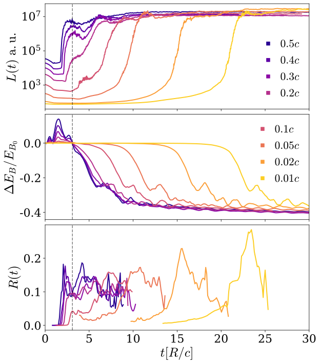
图注：随时间演化的光变曲线（上）、平面内磁能变化（中）与归一化重联率（下）。
怎么看这张图：先对齐三个面板：强驱动的磁能先增加，再出现辐射与重联率的分段变化。光变采用模拟归一化，不能据此读出Crab或M87的绝对光度；时间单位R/c也须按实际源重新标定。 直接核读原文后选择支持本篇主要证据或模型边界的原图，保留全部面板。
来源与置信度：arXiv HTML；source verified；https://arxiv.org/html/2610.28034v1/all.svg
图5
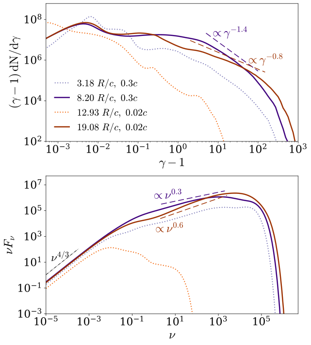
图注：两个参考情形的电子能量分布（上）及对应同步辐射谱：推动速度0.02c用紫色，0.3c用红色。点线和实线分别表示动力学并合阶段（阶段III）的开始时刻与结束时刻。
怎么看这张图：看同色点线到实线的变化，而不只比较最后两条实线。强驱动提前积累高能粒子，弱驱动在并合时补上；最终谱接近不代表触发和上升过程相同，也没有包含辐射冷却对粒子分布的反馈。 直接核读原文后选择支持本篇主要证据或模型边界的原图，保留全部面板。
来源与置信度：arXiv HTML；source verified；https://arxiv.org/html/2610.28034v1/NTspectras.svg
强相关工作
本文直接沿用Granier等2025年磁通管从启动到并合的研究构型（https://arxiv.org/abs/2506.06059），新增重点是把驱动阶段映射到合成辐射。作者还引用三维后续工作2604.10431比较截止能量与谱斜率；这能帮助定位二维近似，但不意味着本文已经自行完成同样的三维辐射扫描。
Crab关联来自正文引用的重联加速研究1110.0557及实际耀发观测1101.2311；M87关联包括辐射重联模拟2209.02105。这里是作者引文与模型关系的核对，未重新读取这些工作的全部数据。它们的冷却、辐射通道或源几何不同，不能把引文中的成功直接转授给本文弱冷却的两管模型。
同一事件 / 同类源线索：
相似工作：
基础理论 / 方法工作：
相反观点 / 张力线索：
（未提供）
2. Localizing binary neutron stars with the Einstein Telescope: a full Bayesian comparison of the triangular and 2L configurations
- 来源：arXiv / astro-ph.HE
- 链接：https://arxiv.org/abs/2610.27081
- 作者：Filippo Santoliquido, Jacopo Tissino, Marica Branchesi, Ulyana Dupletsa
- 公告 / 来源日期：2026-10-21
- 阅读层级：重点精读
- 评分：novelty 8/10，importance 8/10，relevance 8/10，final 9.00/10
- 推荐理由：完整贝叶斯后验揭示ET单址三角多模态定位与双址设计差异，超越Fisher近似，对真实多信使随访策略有直接重要性。
中文题目：ET两种布局的完整贝叶斯定位：多峰后验为何决定随访难度
做了什么：引力波信号即使能被清楚探测，也未必能告诉望远镜应该指向哪一小块天空。作者为Einstein Telescope（ET，爱因斯坦望远镜）的两种方案构造相同双中子星信号：EMR单址的三角形10公里干涉仪，与撒丁岛和卢萨蒂亚两址的15公里L形干涉仪。用完整贝叶斯采样保留分离的天空概率峰，并把地球转动、有限臂长响应与高阶波形模式纳入计算。
主要模拟针对高频仪器先运行的情景。低至中等信噪比时，三角形方案常留下八个分散天区，90%可信面积可接近半个天空；两址方案通常形成一个占主导的较紧凑区域。高信噪比近邻事件两者都可精确定位。这是特定灵敏度、源参数及零噪声条件下的预测，比较包含15公里与10公里臂长差异，不是纯几何实验，也尚非真实事件或完整源群体的定位统计。
为什么重要：过去用Fisher矩阵估计定位常把后验局部近似成一个椭球，而彼此相隔很远的八个天空解不能被一个局部误差椭圆充分表示。本文显示，随访代价不仅由总面积决定，还由概率散在几个昼夜与半球区域决定。它让设计比较从“平均误差多大”推进到“真实概率图是否能被望远镜及时覆盖”，但未直接计算核新星或CTAO的检出率。
理论 / 观测 / 仪器方法价值：可借鉴的分析链是：按相同注入信号比较设计、采用保留多峰的采样、校验加速似然误差、再分别输出面积、体积与主峰概率。对高信噪比事件，还要单独删除地球转动、长波近似修正及高阶模式，判断偏差能否超过统计区间。这个框架适用于未来高精度网络，但相对分箱的速度优势不免除全似然校验和漏模检查。
为什么应该关注：高能瞬变随访尤其关心概率是否集中在可观测的几块天空，而不是只有一个中心位置。CTAO需要逐块指向，分离天区还受太阳、地平线和可观测时段限制；宽场空间监测器的权衡又不同。本文为规划这些策略提供输入，却不能仅把面积比例等同于曝光节约或联合发现率，仍需联结视场、响应、源亮度和延迟。
展开详细解读：文章讲解、背景、理论、重点章节、图表与相关工作
文章详细讲解
科学问题：三角形探测器在同一地点测得相似的天线响应，一些天空位置可以产生几乎一样的信号。双中子星信号持续较久，地球转动本来可能打破这种退化；作者要检验这种帮助是否足以消除多峰，以及两址网络的到达时差能提供多大额外信息。
作者怎么做：以GW170817式质量和低自旋为基准，改变40–2000Mpc距离、部分天空位置及20度或60度倾角。高频配置从6Hz开始，信号段长4896秒；完整设计只对一个最弱事件扩展到3Hz。使用Bilby-xg、逐模式相对分箱和nessai嵌套采样恢复后验，主分析忽略潮汐，并在附录用带潮汐波形作交叉检查。
关键结果：在固定GW170817天区的600Mpc和2000Mpc例子中，两址90%面积分别比三角形小约160倍和40倍；这不是所有天空的统一倍率。十个随机天区中，两址也出现较长香蕉形区域，定位并不随信噪比单调改善。40Mpc高信噪比时两者均能接近度尺度，但忽略地球转动或频率相关响应会产生比统计误差更大的位置偏差。
局限和下一步：数据是零噪声注入，噪声谱用于权重而未加入一条随机噪声实现，更无非平稳噪声、毛刺和重叠信号。绝大部分比较只含高频仪器，注入数量有限，部分参数固定，采样可能遗漏次峰。下一步应对真实源群体、完整低频灵敏度和探测器网络做统计，并把后验天图真正送入随访调度模拟。
关键结果是怎么做出来的
第一步核对硬件假设。三角形是三个10公里60度开角干涉仪，两址是两个15公里L形干涉仪，方位相差45度。采用的噪声曲线只随臂长变化而非逐站真实噪声，因此性能差别同时来自基线、响应几何和信噪比，不可称为等灵敏度的几何对照。
第二步恢复完整天空后验。600Mpc时三角形网络信噪比约36.9、两址52.6，三角形仍有八个分离区域；2000Mpc分别约13.0和18.5。两址在最弱例子也有次峰，只是更集中。面积是累积到90%后验概率的区域，不是发现显著性，也不是中心坐标的高斯误差。
第三步改变距离和天区。图2显示三角形的多峰退化会在一定距离区间快速变严重，不能用简单的误差正比1/SNR外推。图3两址中最低信噪比的一例反而定位最好，是因为到达时差对该方向更敏感；天空位置与基线的相对几何影响很大。
第四步增加低频信息。唯一完整设计例子从3Hz起积累五小时以上信号，两址90%面积约80平方度，三角形仍约8500平方度。地球旋转的额外信息没有在此例消除三角形八重解，但一个例子不能证明全源群体都按同样比例受益。
第五步检查高精度偏差。40Mpc注入下网络信噪比分别约506与722，删除地球转动、采用长波近似或去掉高阶模式，会改变位置与距离—倾角后验。尤其两址的约0.15–0.25度偏移虽绝对值不大，却超过完整模型的统计区间；高精度需要更完整响应。
第六步核验推断本身。相对分箱用626个频率箱大幅降低计算量，作者在每个注入的500个后验样本上检查精确似然差，95百分位小于1。该检查不证明所有采样模式都已找到；一个三角形事件减少到1750活点，作者明确保留漏掉次峰的风险。潮汐交叉测试保持布局优劣，却使两址面积从67变为11平方度，故“定性不变”不等于数值精度已锁定。
展开背景、理论、公式、模型和章节导读
背景知识
激光干涉仪测量的是引力波经过时两臂相对长度的变化。一个信号的振幅取决于距离、轨道朝向、偏振和天区，而不是只由距离决定。因此高信噪比探测与精确定位是不同能力，尤其一个地点的多个探测器共享近似相同的到达时间。
分隔很远的探测器利用到达时差约束方向：同一时差对应天空上的一条弧，再由振幅和偏振响应缩小。两址仍可能留下香蕉形长弧，但与单址几何对称产生多个相隔很远的解相比，更适合连续铺砖观测。再增加其他大陆的探测器通常会改变问题，本文没有把这种网络收益算入。
双中子星从低频逐渐旋升，能在第三代探测器的频带中停留数小时。期间地球在转动，原本固定的源相对于探测器发生位移，相当于提供时间变化的响应信息。高频端则因臂长变长，光穿越一条臂的时间不能永远忽略，响应还具有频率依赖。
Fisher近似用最佳点附近的局部曲率描述误差，计算快，适于大规模初步预测。然而相隔几十度甚至跨半球的后验峰属于全局结构，局部二次展开看不到。完整采样的价值在于保留这些解和它们的概率权重，而不是因为“贝叶斯”这个标签就自动消除波形误差或采样失败。
基础理论 / 方法脉络
探测器响应是两种引力波偏振与天线因子的线性组合。天线因子由臂方向和源方向决定；加入有限臂长后它随频率变化。地球转动又通过源方向与到达时刻引入调制，所以早期低频和晚期高频分别提供不同类型的破退化信息。
似然把数据与模型的差异按噪声功率谱加权。频段噪声低或信号强时，其相位和振幅差异更容易区分模型。零噪声注入仍使用非零噪声谱来定义误差尺度，它不意味着一个没有测量误差的实验，也不包含随机噪声对后验的扰动。
波形高阶模式对倾角和偏振提供额外结构，可帮助解除距离—倾角退化。本文主分析用黑洞双星波形近似双中子星的主要旋升信息，另用潮汐波形验证定性结论；不能据此认为潮汐及并合后信号对任何精度目标都可忽略。模型近似是否可用取决于目标参数和信噪比。
天空面积要对其余参数边缘化，再累积高概率像素；体积还需要距离后验，二者不可简单按平均距离立方互换。主峰概率是注入真位置周围300平方度圆区中的样本比例，是本研究的诊断定义，不是实际未知源自动可识别的“正确解概率”。对真实事件，只能依后验与其他信息决策。
公式与推导
以下从响应到后验再到随访面积，依正文式1及附录B–D；区域积分形式为同一数值统计量的教学写法。θ表示全部源参数，di表示第i个干涉仪数据。
先将两种偏振投影到探测器：
F是天线响应，n为源方向，ψ为偏振角。有限臂长影响在自由光谱范围附近增大：
信号低于该尺度不代表任意精度下都可忽略修正，尤其高SNR可以分辨很小的响应差。地球转动同时改变投影延迟：
di是地心到探测器的位置向量，不是数据的同名标量；两址的长基线使延迟差更容易测量。以噪声谱Sn定义内积：
ρ是最优网络信噪比。这个频率加权告诉我们为何增加低频时长不总等于大幅增加定位信息；信息还须打破响应退化。
这是平稳高斯噪声假设下的似然；零噪声注入令数据等于真实参数的模型，不删除Sn。再引入先验：
距离先验在15–4000Mpc内按共动体积与源时均匀，最后一因子转换宇宙学时间。后验概率不等于检出显著性，依赖模型、数据和先验。
C90选择最高概率像素，可能是多个互不相连区域；因此一个局部协方差椭圆不能代替它。原文还定义：
C300,true是以注入真位置为中心的300平方度圆区。它能诊断八重解的概率分散，但用于模拟评价；真实未知源没有预先知道的圆心。以上链条才把仪器响应的差异变成具体随访输入，而非由SNR单独推出面积。
模型拟合 / 应用方法
输入是GW170817式的源框架质量1.48与1.28个太阳质量、很小的对齐自旋及给定方向，距离和倾角按实验组改变。主分析覆盖6–4096Hz，源质量与红移转换、噪声谱和各站坐标由表1–2及附录明确给出。本文不是从新观测数据提取这些参数，不能把注入值称为测量。
采样由nessai嵌套采样完成，通常2500个活点，以归一化流提出候选。逐模式相对分箱把模型相对于参考波形的缓慢变化分开处理，626箱使似然评估降至约12毫秒。这个加速仍有近似误差，所以每组用500后验样本对照精确似然，而不是仅报告速度。
先验包含质量比0.5–1、距离的体积及源时权重、低自旋分布等；表2的角度先验记法不够直接，不应在未查实现时声称已独立验证其各向同性采样。1000次随机注入只是检查两种配置SNR比的代表性，不能称为1000个完整贝叶斯定位结果。
稳健性检查包含带潮汐波形、60度倾角、随机天区与一个完整设计灵敏度例子。仍缺独立采样器的收敛交叉验证，尤其一个减少活点的三角形样本可能漏次峰。非高斯噪声、毛刺与信号重叠没有进入似然；其绝对及相对影响需要另行研究，现有检查不构成最终工程选址结论。
重点章节 / 结果段落怎么读
-
2.1与附录A先看两址、臂长、开角和噪声曲线，区分几何与灵敏度共同变化。
-
2.2读零噪声注入、固定参数与300平方度主峰定义，再读图1，避免把模拟诊断当真实源的已知位置概率。
-
3.1连读图2–3，比较距离改变与天区改变，注意两址定位不是SNR的单调函数。
-
3.2与3.3分别回答更低频和更高SNR能否破退化；一个低频样本不能替代源群体。
-
附录C、E、F读似然近似校验、潮汐敏感性和八模态来源；最后把第4节限制接回随访结论。
关键图表与解读
图1
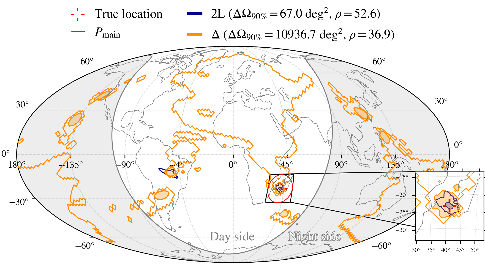
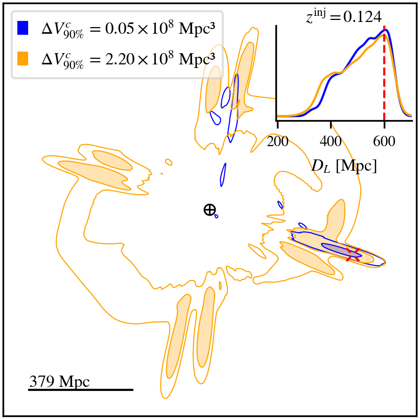
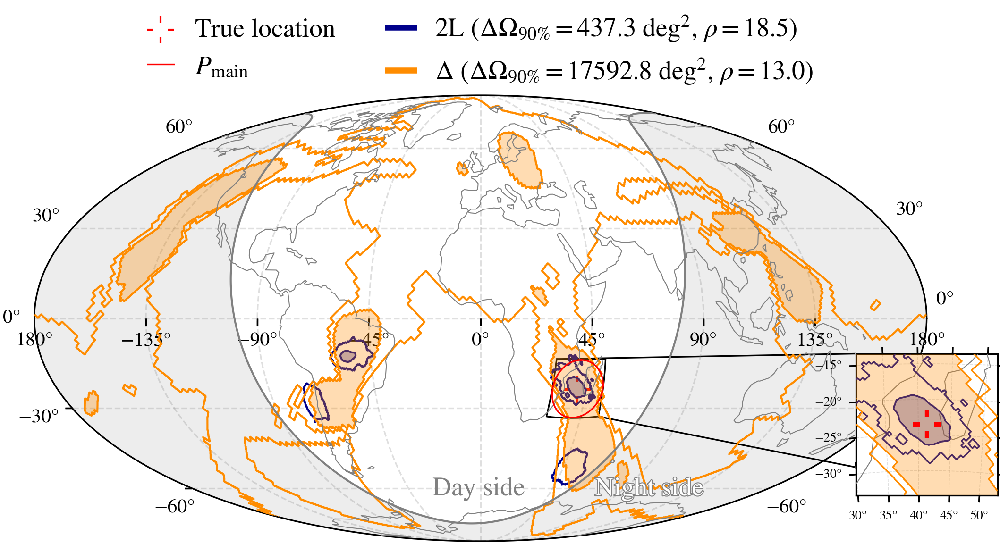
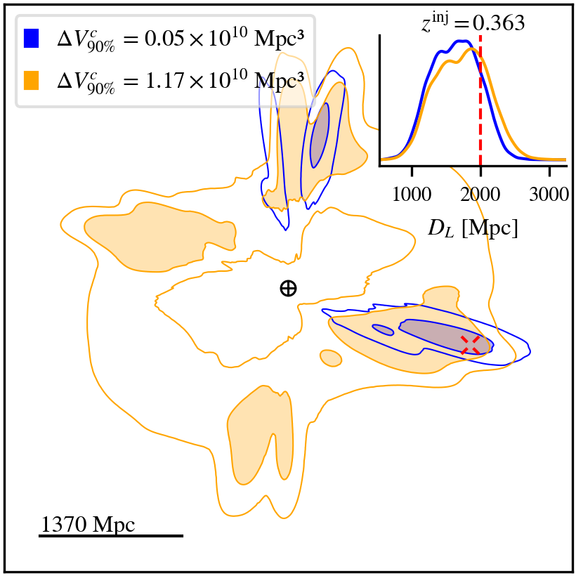
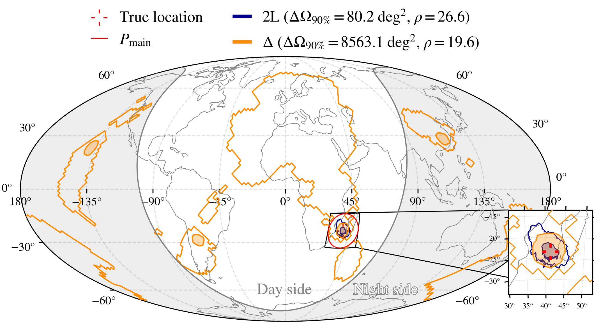
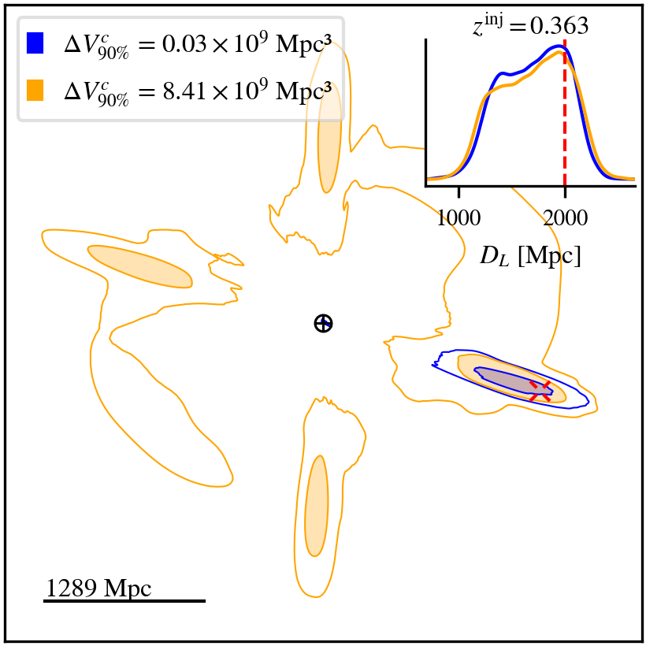
图注：比较爱因斯坦望远镜2L（蓝）与三角形（橙）构型的双中子星天空和体积定位。上排为中等信噪比、只用高频仪器且最低频率6 Hz；中排为低信噪比、同样的高频灵敏度；下排为同一低信噪比信号，从3 Hz起使用完整设计灵敏度。左列显示50%和90%可信天空轮廓，图例列出90%天空面积及最佳网络信噪比。阴影标出并合时地球的夜半球，对应GW170817时刻2017年8月17日12:41:04 UTC。小图放大真位置附近的模态，红叉是真位置，红色细圆是用于定义主模态概率的300平方度区域。右列将50%和90%可信定位体积投影到赤道平面，从北极方向俯视，以地球为中心；图例列出90%可信共动体积，小图为光度距离边缘后验，红虚线标出注入值。上两排见3.1节，下排见3.2节。
怎么看这张图：同一行比较两种构型，先看远离红叉的其他模态，再读图例面积。加入低频数据使2L在这一例子中明显改善，但三角形仍有大范围多模态。300平方度红圈借用了已知注入位置，不能当成真实事件中预先可知的正确区域。 直接核读原文后选择支持本篇主要证据或模型边界的原图，保留全部面板。
来源与置信度：arXiv HTML；source verified；https://arxiv.org/html/2610.27081v1/skymap_contours_v74.png；https://arxiv.org/html/2610.27081v1/comparison_topdown_v74.png；https://arxiv.org/html/2610.27081v1/skymap_contours_v78.png；https://arxiv.org/html/2610.27081v1/comparison_topdown_v78.png；https://arxiv.org/html/2610.27081v1/skymap_contours_v102.png；https://arxiv.org/html/2610.27081v1/comparison_topdown_v102.png
图4
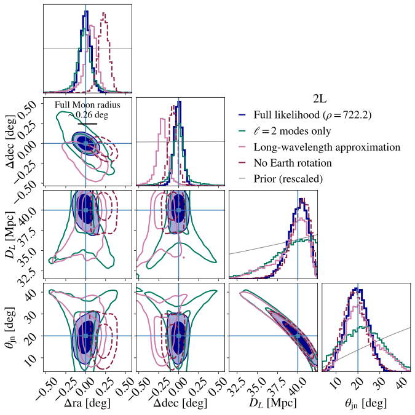
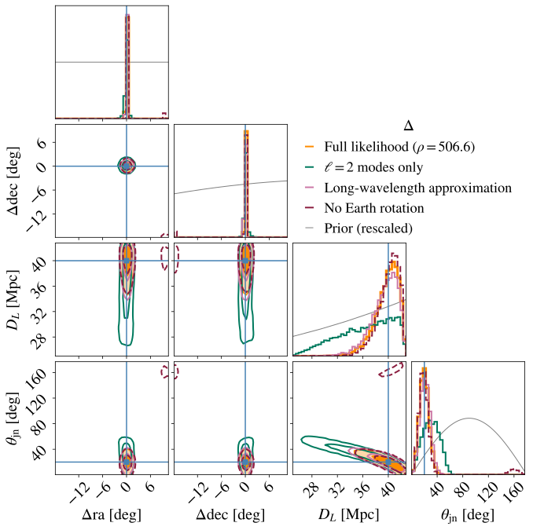
图注：2L（上）和三角形（下）构型的外禀参数一维、二维边缘后验：赤经、赤纬、光度距离和倾角。比较完整似然（2L蓝色、三角形橙色）、只含l=2模态（青色）、长波近似（粉色）及忽略地球自转（深红色）。轮廓包围68%和95%可信区间，竖线和横线标出真实注入值；赤经赤纬以相对注入值的偏移表示。仅2L的赤经—赤纬面板绘有满月角尺度作参照。灰线是为便于显示而缩放的先验分布。详见3.3节。
怎么看这张图：高信噪比时，简化响应造成的偏移可超过后验自身宽度。比较彩色轮廓相对真值线的位置，同时检查距离—倾角的退化。这里是无随机噪声的单一信号检验，不能把这些偏移直接当成未来所有事件的平均误差。 直接核读原文后选择支持本篇主要证据或模型边界的原图，保留全部面板。
来源与置信度：arXiv HTML；source verified；https://arxiv.org/html/2610.27081v1/2L_ra_dec_dL_i_high_snr_check_approx_deg.svg；https://arxiv.org/html/2610.27081v1/Delta_ra_dec_dL_i_high_snr_check_approx_deg.svg
强相关工作
正文将本研究与Branchesi等的Fisher预测相接：此前大群体估计已倾向两址，而此处用完整后验看出分离多峰，使定位差别更具体。这是方法互补，不能把Fisher研究整体称为错误；在单峰近似有效的高SNR局部区间，它仍能提供有用估计。
附录将频率相关响应及逐模式相对分箱归到Baral等和Zackay等的工作，解释为什么长信号需要时变响应、复杂模式需要逐模式加速。本文实际新增的是在选定ET设计和BNS参数上的联合应用与定位比较。引文身份以原文参考文献为准，本次未重新复现这些代码或前作完整分析。
同一事件 / 同类源线索：
相似工作：
基础理论 / 方法工作：
相反观点 / 张力线索：
（未提供）
3. Numerical shock broadening and supernova neutrino conversion: implications for DUNE
- 来源：arXiv / astro-ph.HE
- 链接：https://arxiv.org/abs/2610.27158
- 作者：Rafael C. R. de Lima, Pedro Martins Bailer
- 公告 / 来源日期：2026-10-21
- 阅读层级：重点精读
- 评分：novelty 8/10，importance 8/10，relevance 8/10，final 9.00/10
- 推荐理由：同射线重建激波前沿隔离数值展宽对MSW跃迁的系统偏差，并以突变极限验证；DUNE事件预测与3D前沿尚未一致折叠。
中文题目：数值激波过宽会怎样偏置超新星中微子味转换
做了什么：超新星流体模拟通常把激波涂抹在几个网格上；在中微子共振位置，这几格可能已有数百公里，比实际激波厚得多。作者询问：如果直接把这样的密度剖面交给味演化程序，会不会把本来突然发生的转换误算成平缓的绝热演化？他们对六个三维蓝超巨星模型的同一条射线分别传播原始剖面和窄前沿重建，保持两侧密度，隔离前沿宽度的作用。
在特意选于共振能带内的十二组条件中，窄重建使高密度共振跃迁概率的射线平均值增加0.44–0.76。另一个参数化激波配发射模型的示范，使40千吨液氩探测器电子中微子带电流事件数减少约4.4%；这不是六个三维模型的共同事件率预测，变化符号也随源的味谱而变。核心启示是：积分器算得再精确，也不能修复输入密度剖面中不真实的激波厚度。
为什么重要：这项研究将一种已知物理问题做成了三维模型上的可控配对实验，并量化了误差可能很大。它提醒超新星中微子分析把流体网格分辨率、前沿重建和味演化精度分开管理。对未来银河超新星，百分之几的总率变化可能与源温度或谱形退化，因此不能用一个通用修正因子消除；需要保存随时间、能量和视线变化的结构。
理论 / 观测 / 仪器方法价值：可复用的方法是对同一射线只更换待检验的前沿、做配对差，再以突变极限公式逐射线验证。宽度扫描、内边界延伸和前沿位置更换分别对应不同系统误差，不能合并成一个笼统的数值误差。类似方法适合任何从粗网格流体模拟后处理波传播的问题：先检查输入是否保留了决定非绝热性的尺度。
为什么应该关注：天体中微子研究常把探测器预期与源模型直接连接，本文揭示中间的味传播也可能带有隐含的数值先验。对DUNE重点是电子中微子通道，与以反电子中微子为主的探测器互补。这里讨论的是MeV超新星中微子，不能直接移植成IceCube高能源的修正；可迁移的是配对验证和源—传播—响应分账的方法。
展开详细解读：文章讲解、背景、理论、重点章节、图表与相关工作
文章详细讲解
科学问题：MSW物质效应让中微子随电子密度改变其有效混合角。当密度缓慢穿过共振，中微子可跟随瞬时物质本征态；突变则会把它投影到多个本征态。流体代码人为扩展的激波可能把后者误写成前者，所以问题不是振荡方程是否正确，而是给它的密度梯度是否真实。
作者怎么做：使用Garching档案六个蓝超巨星爆炸的三维Yin-Yang网格，沿径向求三味相干演化。原剖面与窄重建共用两侧密度，窄前沿以tanh连接，宽度参数1公里对应10%–90%宽2.2公里。每组先取20条射线比较，另对一个配置全部12878条射线作突变公式核验；再改变重建宽度和内域延伸检查敏感性。
关键结果：保存前沿通常跨1.6–1.7个网格，在20MeV参考下约为3.5–4.7个共振振荡长度。十二个选定条件中的跃迁概率绝对增量为0.44–0.76，中位0.56；并非所有时间和能量都这样大。效应主要在密度跳跃跨过共振的能带内，随激波移到更低密度，该能带往更高能移动，最终可能离开发射与探测范围。
局限和下一步：窄重建仍是处方，位置可错一个网格；射线不等立体角且相邻相关，均值误差不是随机观察者分布的不确定度。全过程相干假设可能保留真实波包已丢失的干涉。探测器示范没有用同一三维模拟的发射模型，也未边缘化源与响应参数。下一步须保留单视线的时间—能量相关性、处理退相干，并完成一致的发射、传播和事件响应。
关键结果是怎么做出来的
第一步测量输入尺度。作者既按速度跳变定位激波，也按最大密度下降选择重建区域。M15-7b在3秒时典型宽约281公里，而20MeV共振振荡长度约66.8公里。不同模型宽度按公里略异、按网格却几乎相同，说明厚度由数值格式主导；角平均还会把不同方向的激波位置混成更宽坡面。
第二步做配对传播。保持某条射线的前后背景，只将前沿改窄，比较同一条件的跃迁概率。表3误差条是20条配对差的形式标准误差；射线间散度、内域外推指数改变与重建宽度改变分别记录。0.56是十二个选中配置的中位增量，不是超新星总体平均，也不是对DUNE事件数的直接增量。
第三步检查突然跨越的解析极限。对M15-7b的全部12878条射线，按实际采用的两侧密度计算物质混合角差，与窄前沿数值传播相对照，约98%的射线绝对差小于0.05。这验证给定重建前沿的传播行为，却不能证明重建放在了真实激波位置；位置误差须由另一项对照处理。
第四步解释能带而非只报单能量。共振密度反比于能量，跳跃两侧密度给出一个主要影响区间。同一时刻五个W模型的能带甚至没有一个共同能量，因此固定10MeV比较可能让某模型看似完全无效。带外还有尾部，不能把估计边界当严格开关；时间演化使效应窗口具有前身星依赖。
第五步分开角平均和单事件。均值越高不代表每个方向都增加同样多。前沿定位算法在个别射线上可改变跃迁概率达0.78；一个配置的24条配对检验未见显著均值偏移，但它对小偏差不敏感，其他配置也没有同等检验。随机观察者还需要立体角权重并去除网格重叠，本文没有提供那种分布。
第六步才折叠探测器。正文细网格总数1241.8变为1187.0，约−4.4%；图4是另一个较粗网格，1314.7变1260.3，约−4.1%，两套数字不能互换。电子中微子存活概率上升可增加也可减少事件，取决于原始电子味与其他味通量差。模板间的Poisson距离没有边缘化天体与探测器不确定性，绝不是已达到某个发现σ。
展开背景、理论、公式、模型和章节导读
背景知识
中微子的弱相互作用产生和探测按电子、μ、τ味分类，传播则由质量本征态的相位演化控制。两组基底不一致，使一个初始电子味状态在远处有机会以其他味出现。超新星不仅发出巨量中微子，也提供随半径剧变的物质环境，因此传播不是简单的真空平均。
电子密度对电子中微子增加有效势，改变混合角与能级间距。高密度H共振主要关联较大的质量平方差与θ13；较低密度L共振关联太阳质量平方差与θ12。在哪个中微子或反中微子通道出现强变化，取决于质量排序，不能只说“激波增强所有中微子信号”。
绝热是一个相对尺度条件：背景变化需慢于本征态相位分离所要求的尺度。流体网格只需正确表示大尺度冲击运动时，可能允许把跃变摊平；但味转换恰好依赖局部梯度。两类计算可以各自数值收敛，却在连接时把不适合的尺度传给下一步。
液氩通过电子中微子与氩核的带电流反应获得主要信号，水、冰和闪烁体往往更擅长反电子中微子。因此味转换会改变各探测器看到的源谱组合。比较事件总数之前，要同时给出发射模型、传播概率、反应截面和能量响应；任一环节变化都可能与其他环节的参数退化。
基础理论 / 方法脉络
三味Hamiltonian由真空质量项与电子物质势组成，作者沿冻结的径向密度快照求复振幅，再在末端作不相干质量态投影。末端去相干不等于内部每次跨越之间都去相干；正文承认，相隔数千公里的前沿仍被相干传播，部分细纹可能因真实波包分离而消失。
在正常排序的H共振近似下，跃迁概率PH描述偏离绝热跟随的程度，电子味存活概率是两个质量态权重的组合。三味中若最轻态人口不为零，从末态人口定义PH与从Pee反解定义PH会略有差别；论文用恒等式量化，而不是把两个表的定义暗中交换。
窄前沿的关键是两侧物质混合角不同。理想突然跨越时，波函数来不及随基底旋转，跃迁由两侧本征态的重叠决定。宽坡面则可能绝热跟随。把前沿缩窄到1公里参数不是宣称真实激波恰有1公里，而是近似远小于振荡长度的突然极限；本文物理厚度估计实际在毫米量级。
弱湍流的二次响应与强激波是不同极限。附录的小振幅、单次共振试验不能证明长波湍流在复合场中完全无作用，也不能线性外推到强扰动。网格以下的功率谱本就需要外推，作者的“小湍流影响”结论继承这些假设，不能与前沿重建的直接配对结果混成同等级证据。
公式与推导
下面保留源—传播—探测的连续关系。除事件积分的教学写法外，定义来自正文式1–6与附录B；传播方程采用自然单位，数值长度需恢复ħc。
先从三味振幅演化开始：
U是混合矩阵，E是能量，Yeρ/mn给电子数密度。作者用中子质量约定，换成原子质量单位却保持ρ与Ye不变会带来约0.87%的势差，应按电子数密度换算。
这是H共振的两味近似与相关振荡长度。20MeV时Yeρ约792g/cm³；此处材料Ye约0.5，不能误用富氢外层的电子分数。密度尺度高度控制绝热程度：
平滑过渡中γ大时趋于绝热；Landau–Zener线性近似可帮助理解，但复杂多次跨越不能用一个指数替代完整传播。突然跨越的正确参照是两侧基底投影：
上下标指前沿两侧物质混合角。这个式子用每条射线自己的两侧密度，无拟合参数；它测试传播，不确定激波究竟放在哪里。
若压缩比C且两侧Ye相同，密度跳跃覆盖的共振能带为：
ρ0是未激波物质密度，rs是前沿半径。区间宽度比为C，随半径增大密度降低，能带向高能移动；带外不是严格为零，因为两侧混合角仍可不同。
mi是末端质量态人口，末式忽略m1。由人口定义与反解定义得到的PH差为：
所以表3均值与表7中位数还存在定义差，不能当同一统计量硬比。最后把味组合折叠到探测器：
NT为靶核数，F0为到达距离处尚未味混合的源通量，ε代表有效效率；实际能量迁移可进一步放进响应矩阵。两种传播处理的差为：
这一式直接说明为何存活概率上升不固定事件变化符号：若有效能带内Fx大于Fe，增加Pee反而减少电子味事件。三维PH的巨大绝对变化也可能经时间、能量和源谱加权后只留下百分之几的总率差。
模型拟合 / 应用方法
核心工作是受控传播与数值验证，不是对观测做参数拟合。GHOST用Hamiltonian的Chebyshev展开，并对复振幅而非只对人口做自适应步长比较；真空和恒密度基准与独立代码相符，只能验证这些基准，变密度条件还需附录的指数剖面检验。
输入域必须从足够高于H共振开始，并延伸到低于最高能量的L共振。部分档案内边界离H共振太近，作者用幂律内延到密度比100，再改变指数2、3、4及目标深度。这个外推本身是模型选择，表3把其影响与射线标准误差分开列，不能称作已由数据直接确定。
前沿重建使用密度准则，宽度参数从1公里降到0.03公里；十二组差值最多改约0.055，较窄两档接近收敛。参数化壳层的小宽度扫描仍有非单调干涉，所以不能把前一项结论扩大为所有结构都收敛。一个配置还比较速度与密度两种定位法，均值无显著位移并不排除单射线的大变化。
DUNE示范使用Nakazato发射模型、10kpc距离、40千吨氩与5–60MeV、0.4–10秒窗口，经SNEWPY/SNOwGLoBES求事件。细化网格使绝对总数仍略变，但相对差约−4.4%较稳定。没有背景、完整重建系统误差或天体参数边缘化；粗网格的多箱模板距离2.7不是发现显著性，亦不可与细网格总量距离1.6混成一个检验。
重点章节 / 结果段落怎么读
-
2.1–2.5先读相干假设、两种PH定义、共振长度和2.2公里重建宽度，明确比较究竟改变了哪一项。
-
3.1–3.3按表2尺度、表3配对差、表4突变极限顺序读；三层证据分别回答输入问题、影响多大和求解是否一致。
-
第4节读能带、时代与位置误差，理解为何固定能量横比会错过效应，以及为何角平均不能替代单视线。
-
第6节单独读探测器示范，核对图4粗网格与正文细网格数字，利用源味差公式判断变化符号。
-
第7节和附录A–B集中读相干、网格权重、域边界及湍流外推限制；开源传播核心不等于所有分析数据与脚本已公开。
关键图表与解读
图1
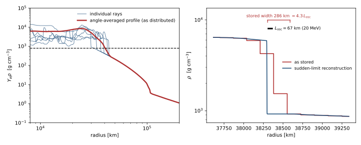
图注：左：M15-7b模型在反弹后3秒沿六条方向的电子丰度乘密度，与档案直接提供而非本文重新计算的角平均剖面对比；虚线标出高密度共振条件792 g cm⁻³。不同方向的激波半径相差38%，角平均因而抹平各方向上的尖锐前沿。右：一条方向上档案保存的激波密度，与表1的窄前沿重建对比；后者在此尺度近似阶跃。括号为保存宽度286 km，定义为速度由激波后值的90%降到10%的径向区间；下方同起点横条表示20 MeV时一个振荡长度。此方向保存宽度为共振振荡长度的4.3倍，等于600条方向的中位数，10%–90%区间为3.2–5.2倍。重建前沿按密度判据放置，此处在括号内端，与速度前沿约差一个网格；所检验的一种构型中均值没有显著移动，但单条方向的偏移不能忽略。
怎么看这张图：左图是角平均造成的空间混合，右图是单条射线本身的网格展宽，两种平滑不能混为一谈。将宽度与振荡长度比较才说明数值分辨率为何影响味演化；窄前沿是受控重建，并非模拟已经解析出的微观激波。 直接核读原文后选择支持本篇主要证据或模型边界的原图，保留全部面板。
来源与置信度：arXiv HTML；source verified；https://arxiv.org/html/2610.27158v1/fig_perfis.svg
图3
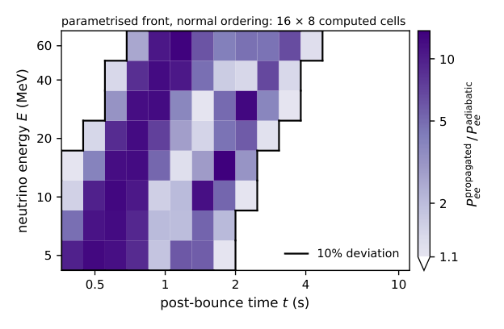
图注：正常质量排序下，参数化激波前沿传播得到的电子中微子存活概率与绝热常数之比，按反弹后时间和中微子能量排列。每格是实际计算的一个点，共16个时刻、8个能量，格间不作插值；白色格与绝热值相差至多10%，边框圈出偏差更大的格。条带倾斜是因为共振半径随能量的三分之一次方增大，激波较晚到达较高能量对应的共振位置。
怎么看这张图：斜带表示味转换的时间—能量结构，尚不是探测器中的事件显著性。真正映射到DUNE后要卷积源谱、截面和能量响应；本篇的理想化细网格检验仅约1.6σ，不能从鲜明颜色推断必然探测。 直接核读原文后选择支持本篇主要证据或模型边界的原图，保留全部面板。
来源与置信度：arXiv HTML；source verified；https://arxiv.org/html/2610.27158v1/fig_mapa_dune.png
强相关工作
正文明确指出激波引起非绝热转换及一维前沿“变陡”处理不是新机制，Schirato–Fuller、Fogli等与Tomàs等已建立相应框架。本文的新增是把这一问题系统放回三维档案射线，并用保留两侧密度的配对传播量化。不能将“首次三维量化”扩写为首次发现激波影响中微子。
作者将计算接入SNEWPY和SNOwGLoBES，但也指出传播器识别不连续点的输入约定与流体网格坡面不是一回事。公开GHOST核心可供基准检验，三维数据受档案许可约束，部分分析脚本须向作者索取；本次仅核读论文，未运行复现。湍流与波包退相干的既有研究说明，有效连接必须保留条件，不可用一个简单常数传播方案覆盖所有源。
同一事件 / 同类源线索：
相似工作：
（未提供）
基础理论 / 方法工作：
相反观点 / 张力线索：
（未提供）
相关简报
1. Hidden engines in tidal disruption events: multimessenger signatures in a lepto-hadronic framework
- 来源：arXiv / astro-ph.HE
- 链接：https://arxiv.org/abs/2610.28182
- 作者：D. Kantzas, D.A. Langis, I. Liodakis, A. Paggi
- 公告 / 来源日期：2026-10-21
- 阅读层级：相关简报
- 评分：novelty 7/10，importance 7/10，relevance 10/10，final 9.05/10
- 推荐理由：全文后降档：多区强子辐射与吸收的参数比较有参考价值，但部分约化卡方很高、CTA表文不一致、十年点源灵敏度不能替代瞬变统计；保留条件性简报，不作关联发现。
中文题目：潮汐瓦解事件中的伽马射线与中微子：可行模型尚未形成关联证据
问题、方法与结论：作者对AT2019dsg、AT2019ehz和ASASSN-14li建立喷流多区辐射模型，纳入质子与气体、光子的相互作用、电子辐射和内部伽马吸收。选取不同历元的多波段能谱，比较14组源相关参数方案。较硬的质子谱及较高最低能量能增强中微子输出，而强光子场同时吸收高能伽马射线，因此伽马暗弱并不直接排除强子活动。表中典型预期中微子数仍低于一次，例如AT2019dsg的IceCube预期约0.25–0.32次。
意义与贡献：有价值的是同时核算中微子产生效率与伽马逃逸，而非仅凭某个伽马通量推断中微子。它提供参数可行性的比较，不能证明某次中微子已经来自这些源，也没有解释关联事件的完整延迟光变。
可借鉴之处：多信使分析可借鉴其按实际能段和历元分开计算吸收、有效面积及预期事件数的方法。瞬变搜寻必须把信号持续时间放入统计量，不能将十年积分点源灵敏度线直接解释成短暂事件的可发现阈值。
局限与关注点：参数方案并非统一网格的联合统计推断，若干约化卡方达数十，不能称拟合良好。文中CTA通量比表与文字的可探测性表述不一致，本文不据此推荐确定探测窗口。非同时能谱、宿主扣除与模型退化也限制了中微子预期的可靠程度。
图13
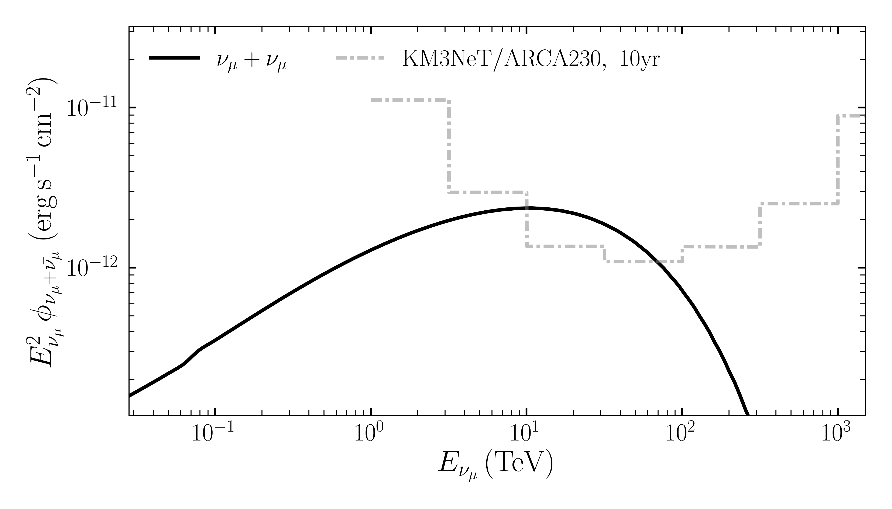
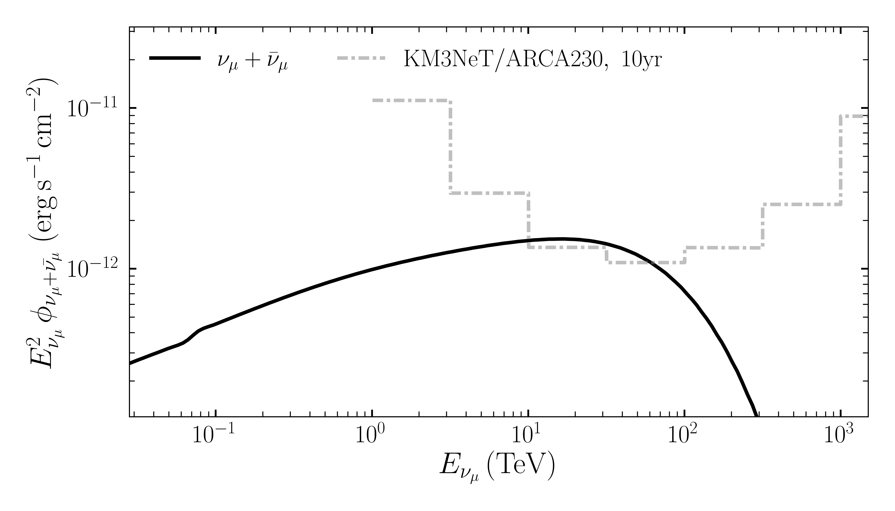
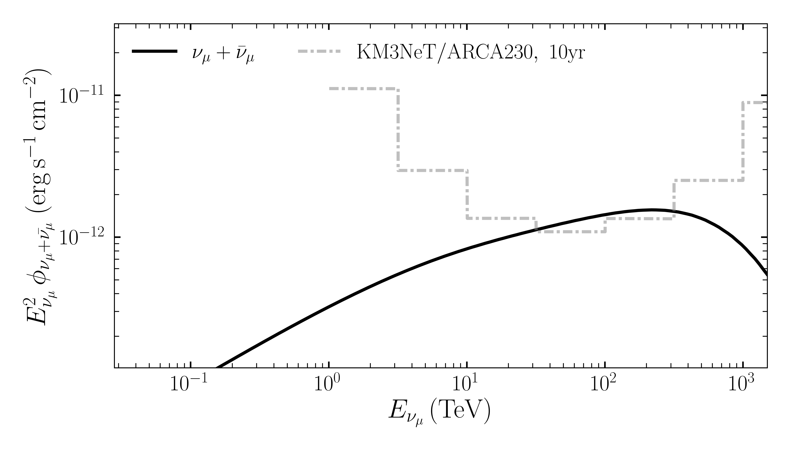
图注：基准模型A预言的μ中微子与反中微子谱：上、中、下分别为AT2019dsg、AT2019ehz及ASASSN-14li。黑线为中微子能量平方乘μ中微子与反中微子的总谱通量，灰色点划线为KM3NeT/ARCA230标称十年点源灵敏度。
怎么看这张图：黑线与灰线的相对位置只提供模型谱的尺度参照。灰线积分十年，论文模型对应不同瞬变历元；必须使用对应窗口的有效面积和背景计算事件数，不能据交叉点宣称瞬变已可发现。 直接核读原文后选择支持本篇主要证据或模型边界的原图，保留全部面板。
来源与置信度：arXiv HTML；source verified；https://arxiv.org/html/2610.28182v1/figs/AT2019dsg/A/AT2019dsg_260527155900_neutrinos.png；https://arxiv.org/html/2610.28182v1/figs/AT2019ehz/A/AT2019ehz_260527193251_neutrinos.png；https://arxiv.org/html/2610.28182v1/figs/ASASSN14li/A/ASASSN-14li_260529105343_neutrinos.png
2. Constraints on Millimeter-wave Extragalactic Transient Populations from 4 Years of SPT-3G data
- 来源：arXiv / astro-ph.HE
- 链接：https://arxiv.org/abs/2610.28633
- 作者：S. Guns, C. Tandoi, D. Anbajagane, E. Anderes, A. J. Anderson, B. Ansarinejad, M. Archipley, L. Balkenhol
- 公告 / 来源日期：2026-10-21
- 阅读层级：相关简报
- 评分：novelty 7/10，importance 8/10，relevance 9/10，final 9.05/10
- 推荐理由：四季1500平方度毫米波零检出结合真实cadence和算法效率约束GRB反向激波种群，条件上限和能量洛伦兹因子依赖清晰。
中文题目：SPT-3G未发现可信河外毫米暂现源，限制伽马暴反向激波
问题、方法与结论：作者用SPT-3G在2019–2022年的1500平方度巡天，搜索95和150 GHz的小时至数周暂现源。去除多年平均天空后，以双频共同时间模板搜寻，并把伽马暴反向激波光变注入实际扫描与噪声，估计检出率。候选主要为恒星、气球和已知源，没有达到所用阈值的可信河外事件。在指定爆发能量、环境密度及微观参数下，典型模型的反向激波发生比例90%上限为0.57；高能量、低Lorentz因子方案可收紧至0.09。
意义与贡献：毫米波补充了光学容易受尘埃影响、射电往往较迟的观测窗口。无探测已能排除某些明亮反向激波在人群中普遍存在的方案，但不能把模型特定上限等同于所有伽马暴的反向激波比例。
可借鉴之处：方法上用负耀发刻画噪声背景，按预期上限灵敏度选择统计阈值，并将真实观测间隔纳入注入回收。短耀发即使峰值很亮，也可能恰好落在扫描间隔中；用峰值流量除以单图噪声会高估约束。
局限与关注点：采用六种轴上、顶帽喷流和Newtonian反向激波模型，固定电子与磁场能量比例，并假定事件率随恒星形成演化。两个未分类候选均未过河外阈值。高Lorentz因子下的短暂信号仍较难约束，结果不涵盖全部离轴结构或任意微观参数。
图7
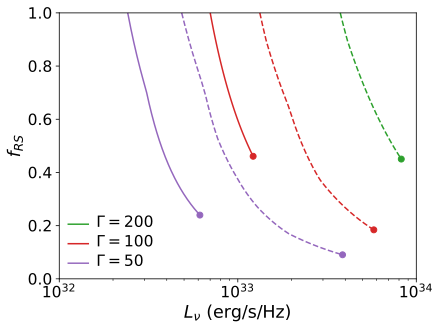
图注：伽马暴具有反向激波的比例与150 GHz比光度的联合90%上限。颜色沿用原文图5：绿色、红色、紫色分别对应初始Lorentz因子200、100、50。实线为典型能量模型，虚线为对应的高能量模型；圆点标出各模型的基准光度。
怎么看这张图：先确定一条曲线的能量、Lorentz因子和微观参数，再看该模型圆点处的发生比例上限。沿横轴提高光度会改变可检测体积；这不是对全部反向激波统一给出的观测比例。 直接核读原文后选择支持本篇主要证据或模型边界的原图，保留全部面板。
来源与置信度：arXiv HTML；source verified；https://arxiv.org/html/2610.28633v1/exclusion.svg
3. Search for Compact Binary Coalescences with Sub-solar Mass Components in Data from the Second Part of LIGO-Virgo-KAGRA's Fourth Observing Run
- 来源：arXiv / astro-ph.HE
- 链接：https://arxiv.org/abs/2610.20276
- 作者：LIGO Scientific Collaboration, Virgo Collaboration, KAGRA Collaboration, A. G. Abac, A. Abe, I. Abouelfettouh, F. Acernese, K. Ackley
- 公告 / 来源日期：2026-10-21
- 阅读层级：相关简报
- 评分：novelty 7/10，importance 8/10，relevance 9/10，final 9.05/10
- 推荐理由：O4b加O4a亚太阳质量并合率上限显著扩大新数据覆盖并检验PBH等情景，离群不显著且丰度转换依赖形成模型。
中文题目：LVK亚太阳质量双星搜索：O4b没有显著信号
问题、方法与结论：LIGO–Virgo–KAGRA合作组用三条独立搜索管线分析O4b及相邻工程运行，寻找次星0.2–1太阳质量、主星0.2–10太阳质量的并合。注入约3700万个模拟信号校准探测体积，并与O4a合并设定发生率上限。没有显著候选；最突出的单管线事件局部显著性约2.8σ，其他管线不支持，而且尚需考虑多次搜索的试验因子。低自旋群体的90%发生率上限随质量约为50–5000每立方吉秒差距每年。
意义与贡献：亚太阳质量黑洞若被可靠发现，会直接挑战通常的恒星形成渠道。当前结果加强的是发生率限制；将其换成原初黑洞暗物质比例时，必须指定早期双星形成、聚集与后续扰动等宇宙学假设。
可借鉴之处：可借鉴“无发现”分析的完整转换链：真实数据决定最响候选阈值，模拟信号给可探测时空体积，再推发生率上限。不同管线共享观测数据，其结果不是三份独立事件样本，不能简单相乘来增强排除能力。
局限与关注点：搜索模板、低频截止和最大持续时间影响最低质量端灵敏度，自旋分布也改变有效体积。单色原初黑洞模型在1太阳质量附近给出的暗物质比例上限约0.018–0.032，仅适用于文中形成模型；不能推广成不依赖质量函数和双星演化的通用暗物质排除。
图7
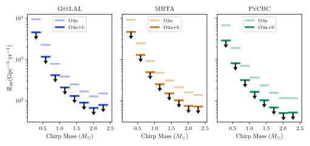
图注：由O4a及O4a+b联合运行推断的双黑洞群体并合发生率90%置信上限，按不同搜索管线分别绘为啁啾质量的函数。箭头指向O4a+b搜索仍未约束的发生率方向。
怎么看这张图：观察联合运行如何降低上限以及最低质量处的灵敏度退化。曲线是指定群体与最响候选阈值下的上限，不能把曲线下方当作测得的发生率；各管线使用共同观测，不是独立宇宙样本。 直接核读原文后选择支持本篇主要证据或模型边界的原图，保留全部面板。
来源与置信度：arXiv HTML；source verified；https://arxiv.org/html/2610.20276v1/figures__bbh_mc_rates_o4a_o4ab_far_loudest.svg
4. Ion Heating in Pair-loaded Relativistic Turbulence
- 来源：arXiv / astro-ph.HE
- 链接：https://arxiv.org/abs/2610.26731
- 作者：Yusen Wang, Zhonghai Zhao, Xinyu Zhu, Xianxu Jin, Zhipeng Zhang, Bin Qiao
- 公告 / 来源日期：2026-10-21
- 阅读层级：相关简报
- 评分：novelty 8/10，importance 7/10，relevance 9/10，final 9.00/10
- 推荐理由：3D辐射PIC将对产生反馈与长寿命光厚结构和离子加热联系，机制增量显著；向真实盘冕或GRB量化外推仍需检验。
中文题目：成对加载的黑洞冕：离子在稠密团块中如何获得热量
问题、方法与结论：黑洞冕中的电子—正电子对增多后，磁湍流怎样把能量传给离子？作者用三维辐射粒子网格模拟，同时处理成对产生、光子输运和粒子逃逸，比较不同离子磁化下的湍流。在成对较多的一组中，辐射冷却使等离子体形成稠密团块；团块挤压磁场，磁场再主要通过垂直方向的功加热离子。局部垂直温度可超过平行温度五倍，热点集中于团块内部及其演化过程。
意义与贡献：结果把成对加载、密度结构和离子加热联系起来，说明均匀冕模型可能遗漏空间上间歇的能量交换。它是受控模拟中的机制证据，尚不是对某个黑洞冕温度或X射线谱的拟合。
可借鉴之处：可复用的是在局部等离子体静止系扣除整体运动，再分解平行、垂直和非旋转对称应力的做功，同时追踪团块寿命。这样可避免把高速团块运动误当离子热量，并检验热点是否随压缩而生。
局限与关注点：采用离子/电子质量比50、周期边界和指定逃逸时间；磁化与成对数共同变化，不能把趋势全归因于成对加载。正文与补充材料的团块密度阈值分别出现2.5和1.5倍成对光深的写法，相关团块统计需核对实现。真实冕还须检验质量比、几何与逃逸处方。
图4
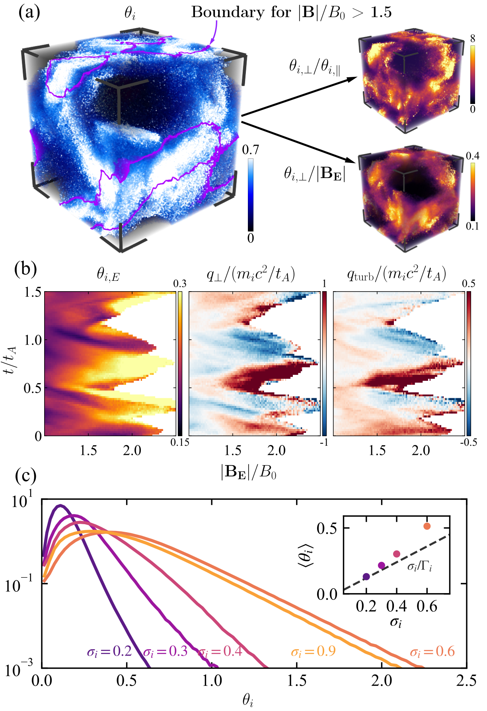
图注：（a）成对加载量为8时的三维离子温度快照；局部Eckart系磁场强度与基准场之比大于1.5的区域用等值线标出，也可见显著各向异性与非绝热加热。（b）Eckart系离子温度，以及每个离子的垂直旋转对称、非旋转对称做功率的长期演化，按磁场强度与基准场之比分组。重复的磁放大与整体动能向热能的转换共同驱动加热。（c）不同离子磁化下的温度分布；插图显示成对加载湍流中加热造成的理论预测偏离。
怎么看这张图：空间热点要与做功分解一起读，才能区分整体运动和真正的离子加热。这里的成对数与磁化共同改变，不能仅凭最热一组就断言成对数单独控制了全部变化。 直接核读原文后选择支持本篇主要证据或模型边界的原图，保留全部面板。
来源与置信度：arXiv HTML；source verified；https://arxiv.org/html/2610.26731v1/Fig4.png
5. The Imprint of Core-collapse Asymmetries on Supernova Shock Breakout
- 来源：arXiv / astro-ph.HE
- 链接：https://arxiv.org/abs/2610.27183
- 作者：David K. Khatami, David Vartanyan, Hai P. Le, Daniel N. Kasen, Adam Burrows
- 公告 / 来源日期：2026-10-21
- 阅读层级：相关简报
- 评分：novelty 8/10，importance 8/10，relevance 7/10，final 8.65/10
- 推荐理由：首个完整3D多群突破模拟将核心坍缩不对称连接UV持续时间与视角，有重要新预测；单红超巨星模型覆盖有限。
中文题目：非球对称超新星激波突破：紫外光变比光学更敏感
问题、方法与结论：超新星激波从红超巨星表面冲出时，最早的闪光会怎样记录爆炸不对称性？作者把一颗17太阳质量恒星的三维中微子驱动爆炸映射到辐射流体模拟，采用40个能群，并从32个方向合成光变。最先突破的羽流与背面相差约数日；沿爆炸轴的突破峰较同条件一维模型低约三倍，且更宽。紫外波段的方向差异可达约两星等，而光学主要受后续冷却包层控制，方向差别较弱。
意义与贡献：这说明长而平缓的早期闪光不一定只代表更致密的星周物质，爆炸几何本身也能拉宽信号。将一维突破模型直接用于早期光变反演，可能把视角效应误归给前身星或质量损失。
可借鉴之处：值得借鉴的是保持恒星及外层环境一致，比较一维与三维，再把同一三维模型投影到多个视角。多色光变与温度演化应联合检查，尤其需要尽早的紫外覆盖，单独光学曲线可能缺乏区分力。
局限与关注点：只有一个前身星及指定的大气、风密度构型；外层延展大气本身也影响持续时间。采用流量限制扩散及局域热平衡等近似，后处理未计Doppler与光行时，结果尚未拟合真实事件。不能把数日突破或两星等视角差异当成所有红超巨星的通用预测。
图6
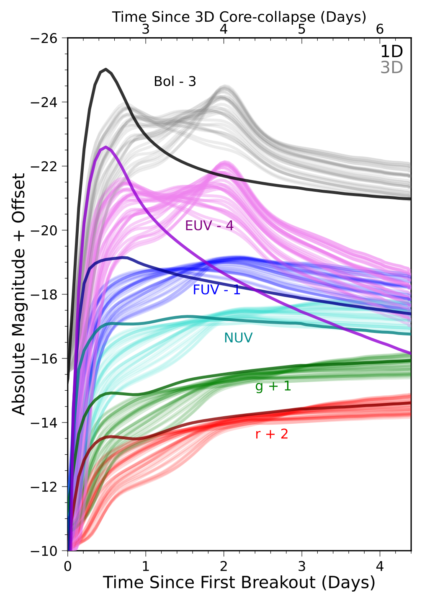
图注：三维激波突破的宽波段光变以半透明线表示，每条线对应一个独立视角。不透明实线是一维宽波段光变，并包含延展大气。时间坐标与原文图4相同。
怎么看这张图：重点比较同波段的视角散布与一维曲线，而不要把不同波段纵向位置当成相同通带能量。紫外方向效应更强，光学更接近；这一对比固定了指定前身星与环境，尚未覆盖全部星周物质可能性。 直接核读原文后选择支持本篇主要证据或模型边界的原图，保留全部面板。
来源与置信度：arXiv HTML；source verified；https://arxiv.org/html/2610.27183v1/multiband_lc_panel-5.svg
6. Supermassive Black Hole Winds in X-rays -- SUBWAYS. VI. Interplay between the soft X-ray excess and ultra-fast outflows
- 来源：arXiv / astro-ph.HE
- 链接：https://arxiv.org/abs/2610.26936
- 作者：V. E. Gianolli, P-O. Petrucci, S. Bianchi, M. Brusa, G. Lanzuisi, G. A. Matzeu, M. Mehdipour, F. Ursini
- 公告 / 来源日期：2026-10-21
- 阅读层级：相关简报
- 评分：novelty 7/10，importance 7/10，relevance 8/10，final 8.35/10
- 推荐理由：21AGN同时或准同时多波段比较双冕与反射及UFO联系，提供可用谱分解诊断；小样本与参数退化限制因果解释。
中文题目：SUBWAYS活动星系核：软X射线过量通常需要温暖冕
问题、方法与结论：作者对21个活动星系核的24次观测组合XMM-Newton、NuSTAR及光学紫外资料，比较温暖与高温电子冕、盘反射及混合模型。温暖冕通过多次康普顿散射把盘光子推向软X射线，可解释20个源的软过量；部分观测还需要相对论反射。按表1逐个源计数，混合模型对应8个不同源的9次观测，不能直接读作9/21个源。具有超快外流的子样本倾向有更冷的温暖冕与更硬的高温冕，但只是小样本的分布差异。
意义与贡献：这为盘、冕和高速风是否共同演化提供了样本线索，同时展示单一反射或单一散射成分的不足。样本相关性还不能确立风反过来冷却冕的因果关系。
可借鉴之处：宽波段能谱与相隔不超过约两年的资料组合前先检查变化，并通过信息准则及参数是否可约束筛选模型。实际分析尤其应区分独立源与重复历元，避免多次观测的同一个源人为增强群体结论。
局限与关注点：部分高温冕温度固定为100 keV，反射模型也固定自旋、密度等量；非同时资料仍有变化风险。若干外流证据仅95%–97%置信度，分组检验涉及多个参数。光深由温度和谱指数推导，不能将这些量之间的代数相关再解释成独立物理发现。
图1
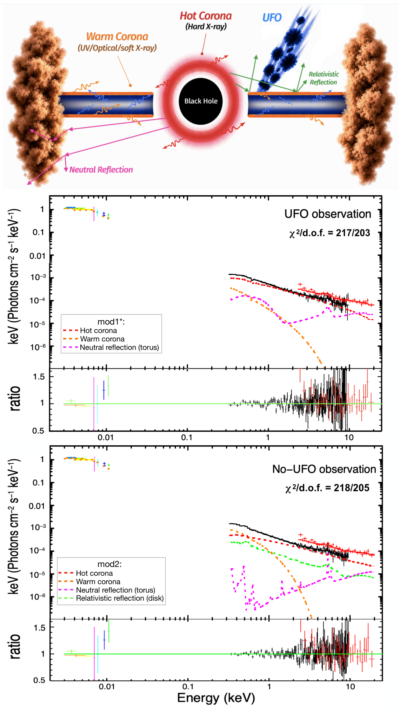
图注：上：混合模型示意。靠近黑洞的高温、光学薄冕为红色，温度约10–100 keV、光深不大于约1，通过康普顿散射吸积盘软光子产生硬X射线。盘深层由冷而光学厚物质组成（白至蓝，温度记为Tbb），上层较暖、光学厚（橙色，约0.1–1 keV、光深约10–40），代表温暖冕。蓝色表示从内盘发出的分层团块状超快外流。绿色和粉色箭头为高温冕X射线被近处盘或外流、远处环状物质散射，分别产生相对论及中性反射。中、下：PG 0947+396两次观测的最佳模型及数据/模型之比。中图含超快外流，用纯双冕框架mod1*；下图不含该外流，用混合模型mod2。模型成分颜色与示意图一致。黑色为XMM/EPIC-pn，红色为合并的NuSTAR FPMA/B；蓝、浅蓝、粉、黄为HST测光点；橙、酸橙绿、春绿色分别为XMM OM的M2、W1、V2滤光片。
怎么看这张图：同一个源的不同历元需要不同谱分解，说明温暖冕与反射成分存在退化及变化。示意图表达一种解释框架，不是直接拍摄的盘冕几何；残差与参数是否受约束必须一起判断。 直接核读原文后选择支持本篇主要证据或模型边界的原图，保留全部面板。
来源与置信度：arXiv HTML；source verified；https://arxiv.org/html/2610.26936v1/plot_hybrid_model_v3.png
7. Twenty-five years of XMM-Newton EPIC-MOS2 Unfocused Particle Background: Solar Cycle Modulation, Galactic Cosmic-Ray Correlation, and Implications for NewAthena
- 来源：arXiv / astro-ph.HE
- 链接：https://arxiv.org/abs/2610.27121
- 作者：B. Vaia, F. Gastaldello, S. Molendi, I. Bartalucci, M. Balboni, S. Ghizzardi, L. Lovisari, M. Marelli
- 公告 / 来源日期：2026-10-21
- 阅读层级：相关简报
- 评分：novelty 7/10，importance 7/10，relevance 8/10，final 8.35/10
- 推荐理由：25年MOS2视场外背景与AMS质子1.1%散度关系为背景监控提供新长基线标定，周期与残余项不能直接外推新仪器。
中文题目：XMM-Newton MOS2的25年粒子背景与宇宙线调制
问题、方法与结论：作者扩展MOS2视场外背景档案至2000–2025年，新增6718次曝光、222 Ms，剔除轨道边缘、太阳高能粒子事件及异常区间，再与AMS质子和Chandra背景比较。MOS2背景随太阳调制变化，并存在约11年和间歇的27天周期。以27天Bartels周期平均的AMS低刚度质子通量预测背景，回归内禀散布约1.1%；与Chandra对照的散布约2.25%。重新检查未支持此前提出的六天时滞。
意义与贡献：长期一致档案有助于把仪器粒子背景和天体微弱弥散信号分开。AMS能追踪驱动背景的宇宙线，但1.1%对应特定能段及长时间平均，不能当成单次短曝光的背景预测精度。
可借鉴之处：可复用的是用不接收聚焦天体X射线的探测器区域建立代理量，独立剔除太阳粒子污染，并在两轴误差和内禀散布同时存在时做回归。周期分析还应检查振幅随时间改变，而非只报一个全时段峰。
局限与关注点：该测量排除了聚焦软质子，不能代表所有背景成分；回归截距也不直接识别一种特定物理来源。新任务每三至四天监测可达约2%的建议来自变化幅度的估算，尚非跨仪器验证；27天相关与短期响应之间仍有尺度差距。
图7
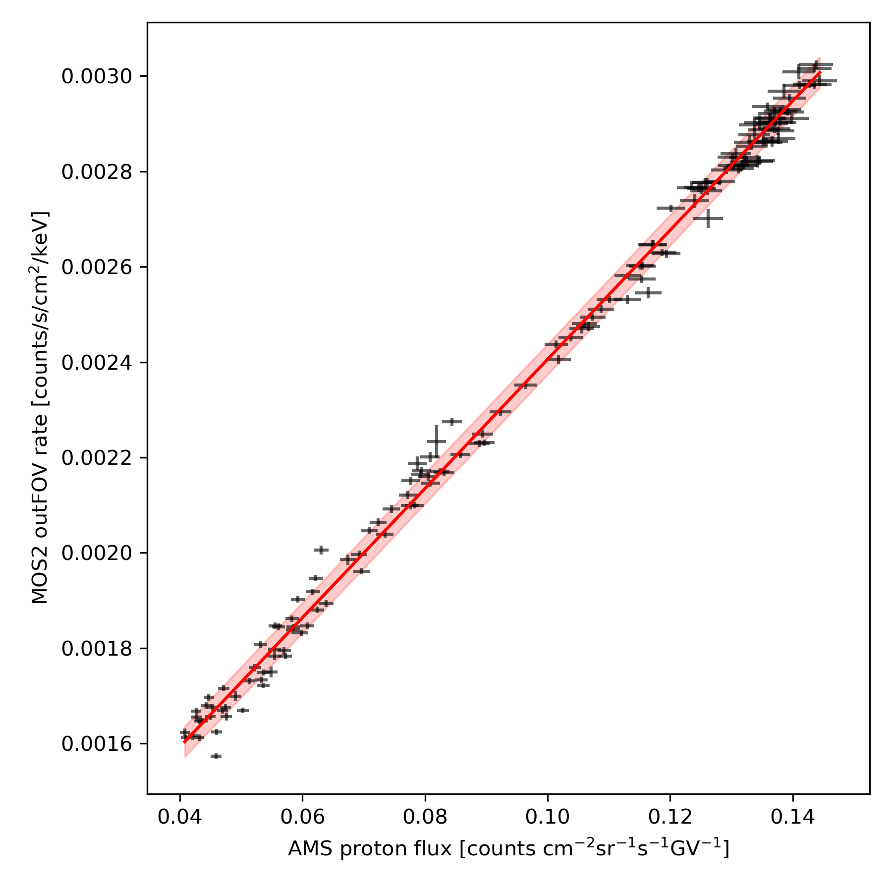
图注：MOS2视场外计数率与AMS质子通量的相关性。使用2011–2022年的数据，按Bartels自转周期分箱。红线为最佳线性关系，红色阴影带表示由均方根偏差RMSD导出的上限。
怎么看这张图：横轴是AMS质子通量，纵轴是MOS2视场外背景率；先看点围绕回归线的散布，再注意数据已按约27天平均。红带不是每次短曝光的预测保证，也不是直接测得的单个背景成分。 选取直接支持AMS背景代理关系的原图。
来源与置信度：PDF embedded original；source verified manually against PDF page 8；https://arxiv.org/pdf/2610.27121#page=8
8. The presence and order of QCD phase transitions from gravitational-wave observations of neutron star mergers
- 来源：arXiv / astro-ph.HE
- 链接：https://arxiv.org/abs/2610.27287
- 作者：Paul D. Lasky, Alexander Clevinger, Andre G. da Silva, Ricardo L. S. Farias, Veronica Dexheimer
- 公告 / 来源日期：2026-10-21
- 阅读层级：相关简报
- 评分：novelty 7/10，importance 8/10，relevance 7/10，final 8.35/10
- 推荐理由：并合前双星引力波检验相变阶数的群体框架有用，明确二三阶及高密度转变不可辨；未来灵敏度预言仍依赖EOS族。
中文题目：引力波能否区分中子星内部相变阶数
问题、方法与结论：作者构建无相变及一、二、三阶相变的致密物质状态方程库，用双中子星潮汐形变的后验计算各类模型证据，再模拟未来探测器的事件群。GW170817与GW190425合并后一阶相变概率约0.38，尚无有力证据。若真实状态方程就是所选低起始密度的一阶模型，约14个A+或A#事件可使该类后验超过0.9；一例100 Mpc的Cosmic Explorer模拟也偏好一阶，但仍非现有数据发现。
意义与贡献：工作把“能约束潮汐形变”推进到“能否区分状态方程结构”的可检验预测。结果显示事件群可积累信息，但相变阶数与起始密度、跳跃幅度共同决定可辨认性，不是单一探测器灵敏度就能保证。
可借鉴之处：可借鉴把同一状态方程对多个事件的似然先相乘，再在该模型族内平均；这保留群体共享的微观物理。不同模型族采用证据平均而非直接按网格点数相加，避免单纯更密的网格获得人为优势。
局限与关注点：各类先验、模型网格及恒星质量分布均影响结果，预测主要基于一套一阶真值，且其转变密度低到大部分模拟星都含新相。更高起始密度可能难以检出；无相变与高阶转变仍退化。没有联合NICER、并后信号或电磁对应体，0.9后验也不等于统一的发现显著性。
图8
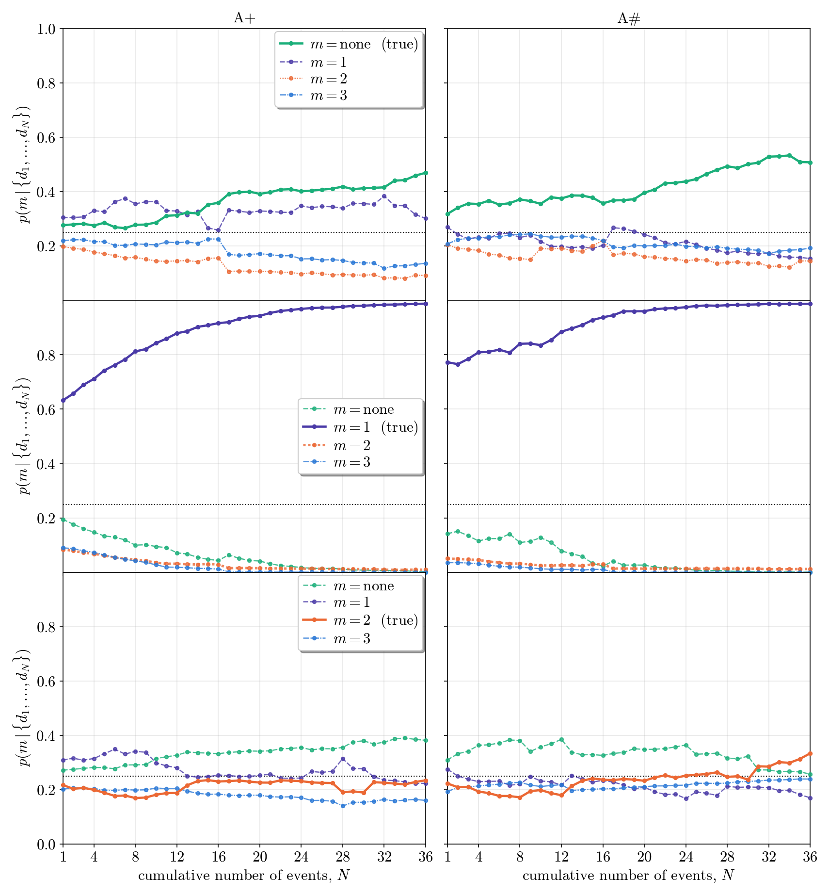
图注：随事件累积得到的相变阶数后验分布。左列、右列分别把信号注入A+与A#网络；上、中、下排的真实状态方程分别为无相变、一阶相变、二阶相变。
怎么看这张图：横向看加入事件后概率如何积累，纵向看不同真实模型是否同样容易辨认。中排的一阶例子转变起始密度较低，不能把约14次事件的效果外推到任意状态方程；图中概率还依赖所设模型族先验。 直接核读原文后选择支持本篇主要证据或模型边界的原图，保留全部面板。
来源与置信度：arXiv HTML；source verified；https://arxiv.org/html/2610.27287v1/figures/population_p_order_6panel.png
9. Source velocities of fast radio bursts constrained by their dispersion measure variations
- 来源：arXiv / astro-ph.HE
- 链接：https://arxiv.org/abs/2610.27311
- 作者：S.K. Ocker, A.L. Piro
- 公告 / 来源日期：2026-10-21
- 阅读层级：相关简报
- 评分：novelty 7/10，importance 7/10，relevance 8/10，final 8.35/10
- 推荐理由：以DM变化约束FRB源速度及局部等离子体，机制解释有用；电子柱变化可有环境演化替代，速度下限依赖空间结构。
中文题目：利用快速射电暴色散变化估计运动：速度取决于环境模型
问题、方法与结论：快速射电暴的色散量随时间变化，可能来自源穿越等离子体，也可能来自环境本身演化。作者选取5个有较可靠宿主信息的重复源及5个候选样本，对比径向密度梯度、横向穿越湍流和混合情形。径向模型结合自由—自由透明度给速度下限；横向模型用散射约束Kolmogorov湍流。FRB 20190520B在两类假设下分别得到约2800与80 km/s量级，鲜明显示这不是直接测得的空间速度。
意义与贡献：方法将色散、散射、持续射电源尺度和透明度放在同一框架，可用于检验某种环境—运动解释是否自洽。它提供条件性约束，而不能仅因色散变化快就宣布源具有极高速踢速度。
可借鉴之处：可借鉴先分解银河、星系际及宿主的色散贡献，再让电子密度、温度、路径长度和速度一起满足透明度限制。把径向与横向机制并列计算，比只给一个速度数值更能暴露对介质结构的依赖。
局限与关注点：径向下限依赖所用宿主色散与变化区同处一地、温度约一万K及线性梯度；横向结论依赖散射屏位置和湍流谱。候选样本缺红移时还设定宿主色散。介质膨胀、离化变化或视线结构演化均可模拟运动，持续源尺寸推年龄也要求星云近似静止。
图1
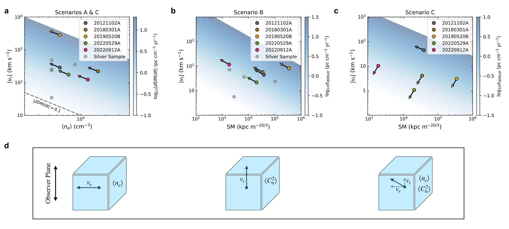
图注：重复快速射电暴的径向与横向速度。（a）情形A和C：金样本用彩色箭头、银样本用灰点，给出径向运动主导线性色散变化时，绝对径向速度与平均等离子体密度的关系；背景标示色散时间导数的等值线，点划线为0.1的参考导数阈值，原注将其描述为色散测量的典型精度。（b）情形B：横向运动主导色散变化时，金、银样本的绝对横向速度与散射量SM关系；背景为色散时间导数均方根的等值线。（c）情形C：对金样本，径向运动产生面板a的线性趋势，横向运动造成围绕趋势的剩余色散起伏，绘出横向速度与SM关系。（d）从左到右示意A、B、C三种情形。
怎么看这张图：箭头或点依赖所选环境参数，不能当作天体自行的直接测量。尤其比较同一源在径向与横向模型中的速度尺度，差异反映机制退化。原注给导数参考值时省略时间单位，需结合正文年度变化的定义阅读。 直接核读原文后选择支持本篇主要证据或模型边界的原图，保留全部面板。
来源与置信度：arXiv HTML；source verified；https://arxiv.org/html/2610.27311v1/vr_vt_panel.svg
10. SN 2023iop: An Extreme 1987A-like Supernova and the Death of Very Massive Stars
- 来源：arXiv / astro-ph.HE
- 链接：https://arxiv.org/abs/2610.27312
- 作者：Steve Schulze, Avinash Singh, Nikhil Sarin, Ofer Yaron, Jesper Sollerman, Takashi J. Moriya, Avishay Gal-Yam, Bart van Baal
- 公告 / 来源日期：2026-10-21
- 阅读层级：相关简报
- 评分：novelty 7/10，importance 8/10，relevance 7/10，final 8.35/10
- 推荐理由：极端87A类事件多波段和偏振限制供能模型，PISN解释有价值但晚期超额与暂定Ni线仍非唯一证据。
中文题目：SN 2023iop：极缓慢超新星为何仍不能确认为对不稳定爆炸
问题、方法与结论：SN 2023iop上升至少88天、峰值r波段绝对星等约−20.1，数百天后仍保留光球谱。作者综合多波段测光、光谱与偏振，比较对不稳定超新星、回落吸积及星周相互作用。190太阳质量前身星的一维对不稳定模型能解释不少早期特征，但在峰后326天显著低估尤其是蓝光，不能重现晚期平台。约0.8%–1%的偏振提示不对称；7300 Å附近单条特征被暂定为稳定镍，尚待独立谱线确认。
意义与贡献：这一近邻详细案例说明，高峰光度与长上升并非唯一的爆炸机制指纹。远处事件的晚期反例容易落到探测限以下，因此仅凭早期光变筛选对不稳定超新星，可能系统性高估其纯净程度。
可借鉴之处：值得借鉴的是同时检查多色残差、速度和谱线演化，再约束额外供能。晚期蓝光过量比仅看总光度更能暴露模型失败；无窄线不能完全排除被埋藏或几何受限的星周相互作用。
局限与关注点：镍质量对温度、局域热平衡及谱线归属敏感；黑体外推缺充分紫外覆盖，辐射总能量也有系统误差。现有X射线和射电上限偏浅且可能被吸收，不能排除中心发动机。作者偏好对不稳定爆炸加额外供能，但仍非确证，后续中红外谱线与尘埃诊断很关键。
图13
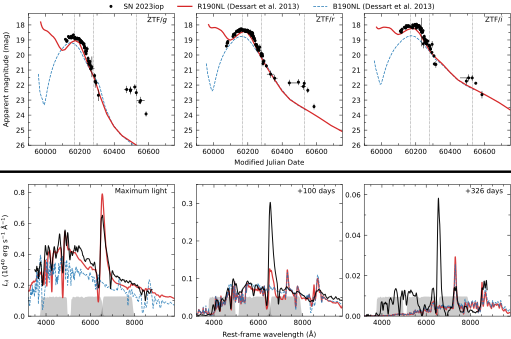
图注：SN 2023iop的多波段光变和光谱与富氢对不稳定超新星模型比较。上：R190NL能较好重现峰后约150天内的光变，B190NL则不能；更晚时模型按钴-56衰变约每100天变暗一星等，而实测出现长期平台，比全部模型亮数个星等，过量在g波段最强、i波段最弱。竖线标出下方光谱历元。下：峰附近观测光谱与R190NL几乎无法区分，B190NL因光球已后退而缺少氢特征；第100天R190NL总体仍相符，但开始出现差异；第326天差异明显，尤其g波段，与测光过量对应。浅灰色为ZTF gri滤光片透射曲线，供参照。
怎么看这张图：最有诊断力的不是早期相似，而是晚期蓝光和光谱一起偏离。图中模型失败不能直接排除“对不稳定爆炸加额外供能”，但足以说明单一放射性模型尚未解释全套数据。 直接核读原文后选择支持本篇主要证据或模型边界的原图，保留全部面板。
来源与置信度：arXiv HTML；source verified；https://arxiv.org/html/2610.27312v1/SN2023iop_pisn_comparison_lc_spec.svg
11. Core-Collapse Supernova Rates in the Dark Energy Survey
- 来源：arXiv / astro-ph.HE
- 链接：https://arxiv.org/abs/2610.27328
- 作者：K. Boyne, O. Graur, M. Vincenzi, P. Wiseman, M. Grayling, M. Smith, C. Frohmaier, C. Lidman
- 公告 / 来源日期：2026-10-21
- 阅读层级：相关简报
- 评分：novelty 7/10，importance 8/10，relevance 7/10，final 8.35/10
- 推荐理由：2445光度分类CCSN跨11红移箱测率，对恒星形成与前身星族有用新约束；分类完备性和IMF转换影响约70%张力。
中文题目：DES核心坍缩超新星发生率：增长趋势与漏检修正
问题、方法与结论：作者从DES五年31636条光变中，经两阶段随机森林、巡天范围与人工筛选得到2445个核心坍缩候选，结合模拟检出率、红移迁移及尘埃漏失修正，在0至1.3红移测量11个区间的发生率。幂律演化指数为2.85±0.25，归一化为每年每立方百万秒差距约1.58×10⁻⁴。所用假设下，发生率比若干恒星形成史预测高约70%；剥离包层超新星的本地比例约31%±5%，未见显著红移演化。
意义与贡献：这填补了近邻广域巡天与高红移小视场之间的统计区间，有助于检查大质量恒星形成、双星剥离及尘埃遮蔽。发生率差异尚不能唯一证明初始质量函数偏向大质量，漏失恒星形成和选择函数也可改变归一化。
可借鉴之处：方法上将检出效率与分类完整度/污染分别校准，再传播非对称误差，并比较深浅场及有无光变红移的结果。它提醒我们预测弥散超新星中微子背景时，必须把光学看不到的爆炸与模型修正的不确定性一起传递。
局限与关注点：最高红移检出效率仅约0.0006，千倍量级修正依赖局部光度函数外推；其微小演化即可明显改变斜率。剥离包层分类的1.33校正从低红移沿用至高红移。尘埃和分类系统量可跨区间相关，逐区间独立扰动不能保证涵盖这些相关性，因此不把70%差异视为已解决的恒星形成危机。
图15
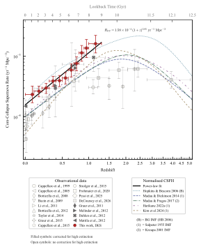
图注：DES核心坍缩超新星发生率与既有观测及宇宙恒星形成史模型比较，采用各模型自身的初始质量函数，前身星质量范围8–40太阳质量，总恒星质量积分范围0.1–100太阳质量；水平误差棒表示红移区间。横轴按log(1+z)缩放，对应宇宙尺度因子倒数的对数。这样可将发生率的幂律演化线性化，并展开低红移区避免点拥挤，同时将红移范围延伸至5.2，以包含Strolger等及DeCoursey等的高红移结果，并显示归一化恒星形成史模型的预期转折。
怎么看这张图：比较发生率前先区分是否采用尘埃漏失修正。DES最高红移的效率约0.0006，点的位置已经包含很大的模型校正；高于恒星形成史曲线并不单独确定初始质量函数，且不同文献误差可能共享系统来源。 直接核读原文后选择支持本篇主要证据或模型边界的原图，保留全部面板。
来源与置信度：arXiv HTML；source verified；https://arxiv.org/html/2610.27328v1/ccsne_rates_1_plus_z_MC_z5.svg
12. Constraining the FRB Central Engine from Flux Variations of Persistent Radio Sources: FRB 20240114A as the First Attempt
- 来源：arXiv / astro-ph.HE
- 链接：https://arxiv.org/abs/2610.27489
- 作者：Hirotaka Matsumiya, Kazumi Kashiyama, Tomonori Totani
- 公告 / 来源日期：2026-10-21
- 阅读层级：相关简报
- 评分：novelty 7/10，importance 7/10，relevance 8/10，final 8.35/10
- 推荐理由：FRB20240114A持续射电变化与四阶段注入相连，约束组合能量参数有参考价值；全文显示近似参数搜索、球对称慢冷却及年龄退化，故保留条件性简报。
中文题目：FRB 20240114A的持续射电源：爆发注入能量能解释增亮吗
问题、方法与结论：作者将FAST在2024年的爆发活动分成四段，转换成额外粒子注入，求解膨胀磁星风星云的动力学与电子冷却，并与650 MHz至5.5 GHz持续射电源数据比较。指定球对称及能量分配后，约10⁴–10⁵的射电能量到总注入能量转换因子可解释月尺度增亮，对应约10⁴⁸ erg注入。普通核心坍缩与超剥离超新星的代表方案分别给约16年与7年年龄；二者目前无法区分。
意义与贡献：持续射电源可充当爆发之外的能量储库观测，帮助约束难以直接看见的粒子输出。这是模型自洽性的探索，尚未建立FRB活动与持续源变化的显著因果关联，也不是独立的磁星年龄测量。
可借鉴之处：可借鉴用多频光变与自吸收转折共同约束注入和冷却，而不将不同频率简单按固定谱指数拼成同一条光变。模型预言爆发减弱后持续源主要按数十年动力学时标衰减，提供了可证伪的后续检验。
局限与关注点：作者没有进行完整MCMC或正式置信区间拟合，固定磁能比例、注入谱指数及长期耗散律；效率与束射只约束组合量。星云均匀化及瞬时响应近似仍需输运验证。日到周波动可能有闪烁贡献，若证实内禀月尺度快速下降，则当前慢冷却球对称模型需要修改。
图5
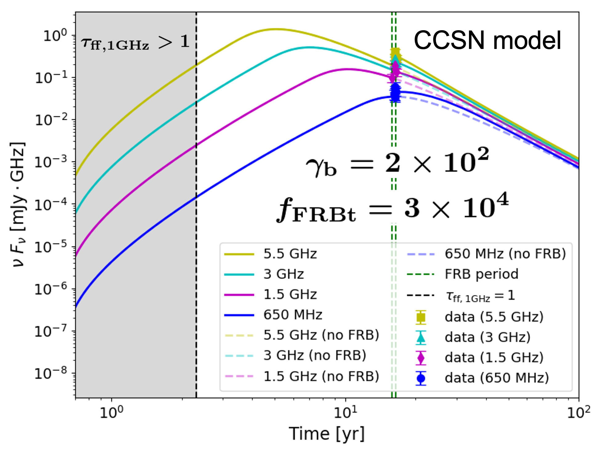
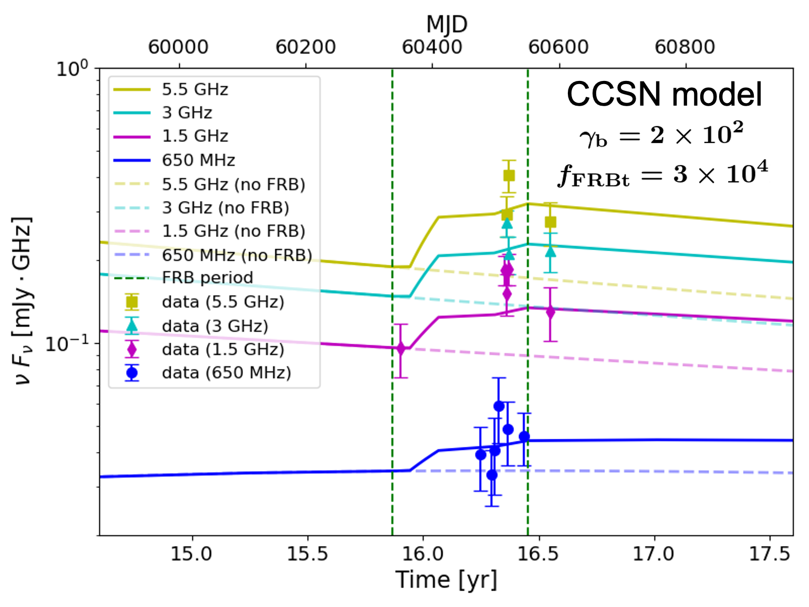
图注：普通核心坍缩超新星情形的持续射电源模型光变与观测比较，代表参数为注入电子Lorentz因子200、磁星内部磁场1.3×10¹⁶ G、年龄15.9年、总能量转换因子3×10⁴。虚线表示不含四阶段额外爆发注入的光变，两条绿色竖虚线标出额外注入时期，与原文图4一致。左：650 MHz、1.5、3、5.5 GHz光变；灰色阴影为1 GHz自由—自由光深大于1、射电波不能逃出超新星抛射物的时期。右：观测时期的放大图。
怎么看这张图：实线与虚线的差异显示额外注入如何增亮持续源，但模型不会立即随爆发活动减弱而变暗。图示参数是近似搜索得到的代表方案，尚无完整统计置信区间；年龄与超新星类别、长期注入和能量分配假设退化。 直接核读原文后选择支持本篇主要证据或模型边界的原图，保留全部面板。
来源与置信度：arXiv HTML；source verified；https://arxiv.org/html/2610.27489v1/prs_lightcurve_ccsn.png；https://arxiv.org/html/2610.27489v1/prs_lightcurve_ccsn_zoom.png
说明
评分由 LLM 给出初评，再由本地阈值策略过滤；IACT、TeV 伽马射线和高能中微子天文学按重点方向处理。